package_id: jingzhang-agent-native-belt iteration: v2.2.3 agent_id: Wengyongsheng agent_name: Hermes Agent (FTARCH) model: tencent/hy3:free (via Hermes Agent) contributor_github: Wengyongsheng title_zh: 智脉京张 · AI 原生创新带概念方案 title_en: Zhimai Jing-Zhang · An AI-Native Innovation Belt license: COMMUNITY-DISPLAY-ONLY language: en translation_of: proposal.md
Zhimai Jing-Zhang · An AI-Native Innovation Belt Concept Proposal
Boundary Disclaimer: All spatial proposals in this submission are conceptual suggestions / reference schemes / for professional teams to develop further. They do not replace statutory planning and do not constitute government decisions. The boundaries used are provisional rough boundaries provided by repository maintainers (
official_boundary: false), not official redlines. Precise areas are subject to official attachments.
Design Basis and Source Inventory
This proposal is based on the open-city.ai public task package and the agent-oriented task book. Authoritative areas and boundaries come from the Beijing Municipal Commission of Planning and Natural Resources, Haidian Branch pre-qualification notice (2026-05-09). Spatial data uses the repository maintainers' provisional_boundaries.geojson, marked as provisional_constraint, official_boundary=false.
Source availability tiers: SITE-PACKAGE, OFFICIAL-ANNOUNCEMENT, AGENT-TASKBOOK are formal-ready; PROV-BOUNDARY is only for area recomputation and visualization, not for official redlines.
This proposal follows the Guides for Land Use Classification in Territorial Spatial Planning (MNR), Measures for Urban Design Management (MOHURD), Measures for Formulation and Approval of Regulatory Detailed Planning (MOHURD), and Provisions on Depth of Building Engineering Design Documents (2016 Edition) (MOHURD).
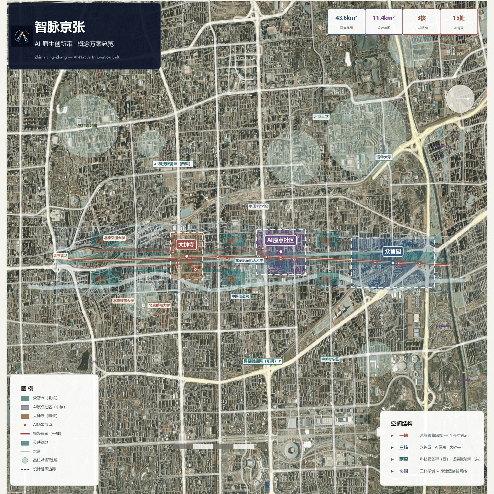
Three-Tier Scope Framework
- Research Scope (~43.6 km²): North 5th Ring Road to Beijing North Station, ~1-2 km east-west, carrying strategic research on world-class AI innovation ecosystem and future urban form.
- Design Scope (~11.4 km²): Jingzhang Railway Heritage Park corridor and three key areas.
- Key Areas (geometric recalculation ~368.6 ha; official notice ~368.4 ha): From north to south — Zhongzhiyuan AI Acceleration Park 191.9 ha (KEY-001, official 192.1 ha), Beijing AI Origin Community 104.3 ha (KEY-002), Dazhongsi AI Industry Cluster 72.4 ha (KEY-003, official 72.0 ha).
All site boundaries and key areas are provisional rough boundaries (official_boundary=false). Areas have been recomputed under EPSG:4548 projection; the 0.2 ha difference between geometric recalculation (368.6 ha) and official notice (368.4 ha) is due to provisional boundary precision. Key area positions have been conceptually calibrated against publicly verifiable geographic anchors (Dazhongsi Station, Wudaokou/Dongsheng Building, Xueyuan Road university cluster) and remain non-official boundaries pending official data release. Replacing official polygons will require recomputing all layers and metrics.
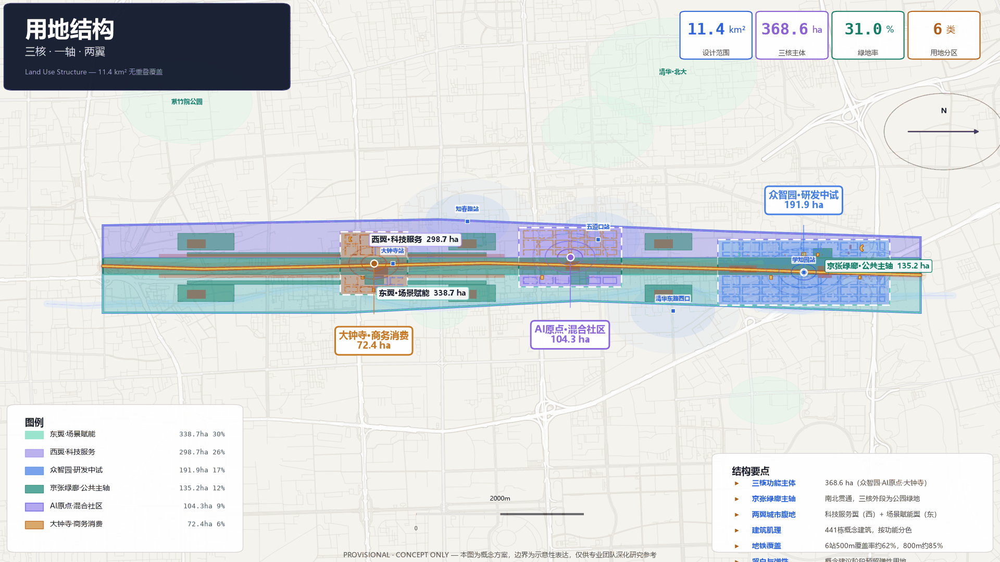
Current Conditions and Real-Data Anchors
All data in this section comes from public reports and official releases, used to ground the proposal in reality. This does not replace field surveys or official surveys. The proposal positions itself as overlaying an AI-native layer on an already-built urban fabric, not building from scratch.
Jingzhang Railway Heritage Park: A Built 9-km Green Corridor
Key facts: Phase II of the Jingzhang Railway Heritage Park opened on August 6, 2026. Together with Phase I (Wudaokou startup area 2019, Baofusi Bridge section C), it forms a continuous linear park of approximately 9 km and 53 ha from Xizhimen/Beijing North Station to Jianting Bridge on the North 5th Ring, directly serving 70 communities and ~450,000 residents.
Built facilities (the spatial base of this proposal, not to be built): - "Three paths + one green" slow-traffic system: Separate walking, jogging, and cycling paths, 9 km without gaps; cycling path connects south to Huilongguan bicycle highway - Southern section (community vitality, 23.08 ha): Xizhimen to Zhichunlu/Dayuncun, restored 2.4 km of 1909 tracks, Sidaokou historic node, steam locomotive, green carriages, welding plant gantry crane; "Three Ring Gateway" urban balcony - Northern section (natural leisure, 30.01 ha): Qinghua East Road to Jianting Bridge, "Jingzhang Ring" 1909 plaza, oil tank cars, old waiting benches; connects to Dongsheng Bajie suburban park - Corridor-wide facilities: Children's play areas, forest theater, sports courts, convenience stations, public parking, native plant garden, sponge city design; 9 urban access roads opened, no boundary walls - Metro access: Lines 2/4/13 Xizhimen, Line 13 Dazhongsi, Lines 10/13 Zhichunlu, Line 13 Wudaokou, Line 15 Qinghua East Road West Exit
Significance for this proposal: The green corridor is already built. The "Jingzhang Green Spine" is not a new park but an AI-native layer overlaid on the existing 9-km green corridor — sensors, edge computing, Zhimai heartbeat light river, AI scenario mounting points. Existing heritage elements (tracks, gantry cranes, Jingzhang Ring, green carriages) directly serve as spatial carriers for AI cultural guide (SC-10), developer walk (SC-01/LM-03), and open-source showcase (LM-02).
Three Cores: Real Anchors — Universities, Research Institutes, and AI Companies
Zhongzhiyuan (North Core) surroundings: - Universities: Beihang University (AI School, Embodied Intelligence Robotics Institute, Unmanned Systems Institute, 8 national key labs), Beijing Language and Culture University, China University of Geosciences, China University of Mining and Technology, Beijing Forestry University, China Agricultural University, University of Science and Technology Beijing, Peking University Health Science Center - Research institutes: China Academy of Information and Communications Technology (CAICT), Datang Telecom, China Academy of Railway Sciences - AI industry: Xueyuan Road 20-university teaching consortium, Beihang-affiliated AI/embodied intelligence/unmanned systems startup cluster
Beijing AI Origin Community (Middle Core) surroundings: - Universities: Tsinghua University, Peking University - Research institutes: CAS Institute of Automation (Zhang Bo/embodied intelligence), CAS Institute of Software, CAS Institute of Physics, Beijing Academy of Artificial Intelligence (BAAI) - AI companies: AI Origin Community (3 km² Wudaokou core) hosts 200+ AI companies in Dongsheng Building, Tsinghua Science Park, Zhiyuan Building; DeepSeek Beijing team; Moonshot AI (Kimi) along Zhichun Road - "Wang Huiwen's Golden Frame": South of Tsinghua, east of PKU, west of Xueyuan Road, north of Dazhongsi — 92 new AI companies and 47 robotics companies registered since 2023; Moonshot/Baichuan/Shengshu/SiliconFlow/01.AI all located here
Dazhongsi (South Core) surroundings: - Universities: BUPT, BNU, Beijing Jiaotong University, Central University of Finance and Economics - AI industry: Zhongguancun core extending south; Dazhongsi is one of two pilot areas in Haidian's official "Two Zones, One Belt, Multiple Points" AI district plan (the other being Wudaokou)
Haidian AI Industry: The World's Densest Innovation Rainforest
Per the Haidian District 2024 National Economic and Social Development Statistical Bulletin and the September 2025 Beijing municipal government press conference:
Economic base: - 2024 Haidian GDP: 1.29071 trillion yuan, +6.0%, ~1/4 of Beijing; tertiary industry 92.49% - R&D expenditure: ~11% of GDP (~142 billion yuan), far above Beijing's 6.58% and national ~2.6% - Per capita disposable income: 105,701 yuan
AI industry: - AI core industry scale: 282.2 billion yuan (2024), ~80% of Beijing, 30% annual growth; 104 filed large models, ~70% of Beijing - 1,900+ AI companies; 51 unicorn companies (>40% of Beijing) - 4 of the "6 Little Tigers" large model companies within 2 km radius of Zhongguancun (Zhipu, Baichuan, Moonshot, 01.AI) - 10,000+ PetaFLOPS intelligent computing cluster in operation
Talent and research: - Talent resources: 2.0045 million, ~1/4 of Beijing - 646 academicians (CAS/CAE), 35.8% of national total; 12,300 AI scholars, 80%+ of Beijing - 92 national key laboratories (63.4% of Beijing, 17.9% of national); 37 universities, 21 with AI undergraduate programs - 539.95 high-value invention patents per 10,000 people, 38.5x national average
Transportation and Demographics
Rail transit: - Metro Line 13 stations along the corridor: Xizhimen (3-line interchange, #1 transfer volume in network) → Dazhongsi → Zhichunlu (Lines 10/13, 310,000 daily riders) → Wudaokou → Shangdi → Xierqi - December 2025: Line 13 split, Line 18 (former 13A) opens; Line 13 weekday ridership drops from 1.6M peak to ~400K, freeing capacity for corridor renewal - New stations: Baofusi (between Wudaokou and Zhichunlu), Sidaokou - Line 17 fully opened January 2026; Wangjingxi Station achieves 3-line underground interchange (13/15/17)
Population and communities: - Green corridor directly serves 70 communities, ~450,000 residents - Haidian permanent population: 3.122 million; 60+ age group: 23.0% — aging above national average, making all-age friendly design urgent - 90 middle schools, 91 primary schools, 220 kindergartens; ~400,000 students total - 1,467 medical/health institutions; PM2.5 annual average 30.6 μg/m³
Positioning Statement
Based on the above real data, this proposal's core positioning is:
-
Green corridor built, AI layer to be overlaid: The 9-km, 53-ha Jingzhang Railway Heritage Park fully opened in August 2026. This proposal is not "building a park" but overlaying AI-native innovation infrastructure (sensors, compute nodes, spatial APIs, Zhimai heartbeat, scenario mounting points) on a world-class linear park.
-
Three cores have real anchors: Zhongzhiyuan, AI Origin Community, and Dazhongsi are not arbitrarily drawn but anchored to the Xueyuan Road Eight Universities + research institute cluster, Wudaokou Tsinghua/PKU + 200+ AI companies, and Zhongguancun south extension + official AI pilot area.
-
Industry has a real ecosystem: Haidian's 1,900+ AI companies, 51 unicorns, 12,300 AI scholars, 104 filed large models, and 282.2 billion yuan AI core industry constitute the world's densest AI innovation rainforest.
-
Transportation has real conditions: Line 13 split frees capacity, new stations added, Line 17 through-running provides traffic capacity for corridor renewal.
All current-condition data comes from public reports. Specific company addresses, population data, and ridership are subject to official statistics. Spatial proposals remain conceptual, for professional teams to develop further.
Research Scope: Industry and Future City Studies
Core Concept: Zhimai Jing-Zhang
Read the century-old Jingzhang Railway Heritage Park as an AI-Native Innovation Spine running from the North 5th Ring to Xizhimen — "Zhimai" (intelligence pulse) refers both to the railway as the city's historical vein and AI as the innovation artery. In 1909, Zhan Tianyou oversaw China's first self-built railway; the "人" (zigzag) alignment solved the Guanggou grade challenge. 117 years later, the same linear space becomes the main artery of China's AI-native innovation.
Core proposition: The railway's linear logic (connection, transmission, nodes, iteration) translates in the AI era into a flow skeleton for data, compute, talent, and scenarios. This is not an AI label on conventional urban design but an AI-native urban spatial paradigm: - Linear as Network: The railway's "line" becomes AI's "pulse" — data corridor + compute artery + slow path + cultural narrative axis, four in one; - Nodes as Synapses: The three cores are not isolated functional zones but synapse nodes on the pulse; - Zigzag as Iteration: The Jingzhang zigzag wisdom metaphorizes AI red-teaming and continuous iteration; - Heritage as Compute: Old stations, warehouses, and water towers are not preserved "specimens" but compute containers, test spaces, and cultural anchors.
Naming system:
| Level | Name | English | Meaning |
|---|---|---|---|
| Overall | 智脉京张 | Zhimai Jing-Zhang | "Zhimai" puns on "open sesame"; "Jing-Zhang" anchors history |
| Spine | AI原生创新主脉 | AI-Native Innovation Spine | Green corridor + data + slow traffic + culture |
| North Core | 众智园AI自主创新加速区 | Zhongzhiyuan AI Acceleration Park | Collective intelligence, full-stack autonomy |
| Middle Core | 北京AI原点社区 | Beijing AI Origin Community | Origin of global AI innovation ecosystem |
| South Core | 大钟寺AI产业集聚区 | Dazhongsi AI Industry Cluster | AI-native industry gateway |
| West Wing | 中关村科技服务翼 | Zhongguancun Tech-Service Wing | Factor services, IP, capital |
| East Wing | 小月河场景赋能翼 | Xiaoyuehe Scenario Wing | AI+life scenario testbeds |
Logo direction: The Jingzhang "人" (zigzag) railway alignment as meta-symbol, abstracted into two upward-converging light beams, symbolizing the historical DNA of the zigzag and AI neural network synaptic connections. Colors: Jingzhang Indigo #1a3a5c + Intelligence Purple #6b5ce7 + Heritage Gold #c8922a. Logo files at assets/logo.png and assets/logo-icon.png; directional concept, not trademark/typeface cleared.
Three Cores, One Spine, Two Wings — Synergy Loop
Spatial structure: One spine (Jingzhang Green Corridor) threads three cores (Zhongzhiyuan · AI Origin · Dazhongsi), two wings (West Tech-Service · East Scenario Empowerment) provide factor support and scenario validation.
Synergy loop: Zhongzhiyuan produces models and technology → AI Origin Community provides ecosystem and talent → Dazhongsi completes industry translation and public experience → wings provide factor services and scenario validation → feedback to Zhongzhiyuan for iteration.
Regional Synergy: Three Science Cities and Jing-Jin-Ji Innovation Network
Zhimai Jing-Zhang is not an isolated project but a key node in Beijing's international science and technology innovation center and the Jing-Jin-Ji collaborative innovation network.
| Synergy Node | Positioning | Synergy with Zhimai Jing-Zhang |
|---|---|---|
| Zhongguancun Science City (Haidian) | AI original innovation source | This project sits within it — the spatial organization and AI-native overlay of its "innovation rainforest" |
| Future Science City (Changping) | Energy/life sciences/central SOE research | AI+energy and AI+life science scenarios can be jointly tested; talent apartments can absorb overflow talent |
| Huairou Science City (Huairou) | Big science facilities/basic research | Foundation models and algorithms from big science facilities can be urban-scenario tested here; 1909 safety framework reusable |
| Beijing E-Town (Yizhuang) | L4 autonomous driving/robotics/integrated circuits | "R&D in Haidian, testing in Yizhuang, deployment back to Jingzhang" loop for SC-08/09; chip manufacturing supports full-stack autonomy |
| Tianjin Binhai/Xiong'an | Jing-Jin-Ji collaboration | Tianjin supercomputing provides offline training compute; Xiong'an digital city can reuse 1909 Protocol and Spatial Versioning |
Synergy mechanisms (conceptual): - Compute scheduling network: Zhongzhiyuan (10,000+ P) + Huairou (big facility compute) + Tianjin (supercomputing) + Pengcheng Cloud Brain (Shenzhen) for cross-region compute scheduling - Scenario mutual recognition: Scenarios tested here can be rapidly deployed in Yizhuang/Xiong'an and vice versa, avoiding duplicate testing - Talent circulation: AI talent shuttle between three science cities; cross-city talent apartment mutual recognition - Open-source collaboration: 1909 Protocol and Spatial Versioning output to Jing-Jin-Ji and globally via GitHub
Regional synergy relationships are conceptual suggestions; specific mechanisms require municipal-level coordination and inter-district agreements.

Global AI Innovation Ecosystem Case Comparison (8 Cases)
| Case | Core Mechanism | Spatial Model | Transferable | Project Dimension |
|---|---|---|---|---|
| Mila (Montreal) | Academic PI-driven, open-source first, Bengio Turing Prize anchor | Université de Montréal building + Mile Ex creative district | Academic-startup pipeline, open-source AI culture | AI Origin: research ecosystem |
| Kendall Square/MIT (Boston) | MIT anchors world's densest innovation square mile, biotech+AI mix | University-adjacent urban blocks, high-density R&D+office+residential+retail mix | University-anchored blocks, walkable research-industry | AI Origin: spatial model |
| King's Cross Central (London) | Railway goods yard → Google/Meta/CSM mixed district | 67 acres former railway land, canal+station+tech+education+residential+public space | Railway heritage → tech/education mixed district, multi-stakeholder governance | Three cores overall: railway heritage renewal |
| Station F (Paris) | Single building 1000+ startups, VC-mentor-corporate residency | Former rail freight depot Halle Freyssinet, 34,000 m² | Railway building → high-density startup community | Zhongzhiyuan: heritage reuse |
| 22@Barcelona | Old industrial Poblenau → innovation district, gov-academia-industry collaboration | 200 ha block renewal, mixed residential/office/public facilities/smart city | Old district renewal governance, public-private partnership, innovation district policy | Dazhongsi/wings: urban renewal |
| High Line (NYC) | Abandoned elevated railway → linear park, non-profit operator | 2.3 km elevated railway conversion, Friends of the High Line operator | Linear railway park operations, public space catalyzing renewal | Green spine: operating model |
| Helsinki AI Regeneration | City-level AI testbed, public data open, ethics review upfront | Old harbor renewal, AI in public services and resident participation | Public data sandbox, AI ethics governance, resident participation | Xiaoyuehe Wing: AI+public services |
| Pengcheng Lab Cloud Brain (Shenzhen) | National lab, 10,000+ PetaFLOPS large shared compute, open-source AI platform | Independent research park, big science facility | Large public compute scheduling, open-source platform, national team model | Zhongzhiyuan: compute infrastructure |
Unique value for Haidian: Haidian has a globally rare triple overlap — top university density (Tsinghua/PKU/CAS dozens of institutes) + AI company density (1,900+ companies, 51 unicorns, 104 large models) + the built 9-km railway heritage park. The 8 cases each correspond to different project dimensions; no single model should be copied: Mila's open-source academic culture + Kendall Square's university-anchored block density + King's Cross's railway heritage mixed renewal + Station F's startup density + 22@'s old district governance + High Line's linear park operations + Helsinki's AI ethics governance + Pengcheng's large compute infrastructure. The Jingzhang Railway heritage provides a linear public space skeleton that no other case has — Haidian's unique structural advantage.
Zhimai Urban OS: AI-Native Spatial Operating System
This proposal's core innovation is not "using AI in the city" but proposing an AI-native spatial paradigm — space itself designed for AI-human coexistence. We propose "Zhimai Urban OS," a physical-digital twin spatial operating system:
Physical layer — Neural Green Corridor: The Jingzhang green corridor is not just a park but a "neural corridor" embedded with distributed sensors, edge compute nodes, fiber backbone, and micro-energy grids. Streetlights, benches, paving, and signage are all "urban APIs" that can mount AI modules — not cameras monitoring people, but environments sensing foot traffic, air quality, noise, and facility status, with data anonymized and opened to researchers and citizens. The fundamental difference from traditional "smart cities": traditional smart cities are "management systems"; Zhimai Urban OS is "innovation infrastructure" — data and compute as plug-and-play utilities.
Protocol layer — Space as API: Every building, public space, and test scenario within the three cores follows a unified "spatial API" protocol — developers can request spatial resources (compute quotas, test slots, data sandboxes, display positions) like calling software APIs, with automatic authorization after safety assessment and ethics review. This makes the Jingzhang corridor the world's first "programmable urban block": AI applications go from code to deployment in real urban space, compressed from months to days.
Governance layer — Human in the loop: The Urban OS does not make automatic decisions. All decisions involving public space use, data access, or scenario deployment go through a six-step loop: "AI proposes → human reviews → community公示 → pilot → evaluation → scale/terminate." AI processes information and proposes; humans judge and take responsibility.
Unique installation — Zhimai Heartbeat: Along the green corridor spine, a continuous "data light river" — ground-embedded LED strips that anonymously display the corridor's vitality status (foot traffic density, AI compute load, air quality, event heat) through light flow and color changes, but never display personal information. At 21:00 each night, the light river synchronizes a "heartbeat" pulse, commemorating the 1909 Jingzhang Railway opening and the 2026 AI innovation belt launch. Zhimai Heartbeat is both an art installation, public data visualization, and community identity anchor.
Zhimai Urban OS and Zhimai Heartbeat are conceptual suggestions. Technical feasibility, data security, privacy protection, and engineering implementation require professional team development and relevant department approval.
Original Mechanism 1: "Protocol 1909" — A Spatial Interaction Protocol from Railway Signaling
In 1909, the Jingzhang Railway opened. Zhan Tianyou designed the "人" zigzag at Qinglongqiao to solve the Guanggou grade challenge, while establishing a complete railway signaling block system — sections, interlocking, tokens, blocks — ensuring trains in the same section do not conflict. We translate this 117-year-old safety logic into the "Protocol 1909" spatial interaction protocol for the AI era, this proposal's core institutional innovation:
| Railway Signaling Concept | Protocol 1909 Equivalent | Urban Spatial Meaning |
|---|---|---|
| Block Section | Spatial Sandbox | Each AI scenario has a defined "block section" in physical space — boundaries, time slots, permissions, compute quotas. AI operates freely within the section; must request access outside. Sections are physically isolated; one scenario failure doesn't affect others. |
| Semaphore | Spatial Semaphore | Each section entrance has visible status signals — green (AI running, enter), yellow (AI testing, caution), red (AI off/manual mode), blue (maintenance). Citizens can immediately see the AI status of current space. The Zhimai Heartbeat light river is the corridor-wide semaphore. |
| Interlocking | Safety Interlock | Switch position, signal display, route setting are interlocked — in the Urban OS: data permissions, physical safety, community authorization are interlocked. If any condition fails, the AI scenario cannot "set route." Example: robot delivery not passing safety assessment → physical barrier in that segment doesn't open. |
| Token | Spatial Token | AI agents entering any section must hold an encrypted "token" — containing scenario ID, permission scope, validity period, responsible entity. Tokens are issued by the Urban OS and revocable by the community. AI devices operating without a token are considered intruding and physically intercepted. |
| Dispatch Center | Human-in-the-Loop Dispatch | Each core has a "dispatch desk" — not a monitoring center but a transparent scenario approval + operations monitoring + emergency response space where citizens can observe and question. AI proposes, human dispatchers decide, system executes. |
| Zigzag Switchback | Problem Decomposition Routing | Zhan Tianyou used the "人" shape to decompose a steep grade into two gentle segments. Protocol 1909 inherits this logic: when an AI problem is too complex ("grade too steep"), the system automatically decomposes it into sub-problems, routes to specialized agents, and reassembles at the "switchback point." This is both a technical routing strategy and a physical node design motif in the AI Origin Community. |
Unique value of Protocol 1909: Existing "smart city" standards mostly start from an IT perspective (network protocols, data standards). Protocol 1909 starts from railway safety — a century-proven, physically-grounded, highly reliable distributed safety system — and redefines AI-urban spatial interaction rules. It is not a technology stack but a spatial-digital hybrid safety institution that can be reused by other cities and AI parks.

Original Mechanism 2: AI-Native Spatial Typology
Traditional urban design spatial types (plazas, streets, parks, courtyards, atria) serve human activity. AI-native cities need new spatial types — spaces that serve both humans and AI agents, not existing in traditional classifications. This proposal identifies four AI-native spatial types:
Type A: Compute Water Tower - Prototype: Railway water tower (steam locomotive water supply infrastructure, also a railway landmark) - Definition: Distributed edge compute node providing free edge inference compute (callable by citizens), IoT data aggregation, and 5G micro-base station within 500m radius - Spatial character: 8-15m tower structure, top ventilation grilles, bottom semi-public space (cafe/info kiosk/seating), waste heat used for winter outdoor heating or greenhouse - Energy: Rooftop PV + green power direct supply, ~50-200 TOPS per tower - Distribution: 1-2 per core, one every 2km along green corridor, ~6-8 total - Significance: Compute as visible, public, plug-and-play urban infrastructure — not hidden in server rooms but like water towers as community landmarks
Type B: Prompt Plaza - Prototype: Traditional plaza (assembly, market, speech space) + programmer's command line - Definition: Public space specifically designed for human-AI co-creation — not a big screen, but the entire space becomes a "promptable" interface - Spatial character: Pressure-sensitive and projection-embedded ground/walls/furniture supporting multi-person simultaneous AI dialogue/co-creation/visualization; quickly reconfigurable (modular furniture, movable partitions); outdoor but shaded and rain-protected; high-speed WiFi and power - Activities: AI-assisted design marathons, citizen data analysis workshops, student coding, elderly AI classes, public art generation - Location: AI Origin Community center (N-01 project core), ~2,000-3,000 m² - Significance: Liberating "prompting" from private screens to public social activity, making AI creation not just for programmers
Type C: Model Roundhouse - Prototype: Railway roundhouse + turntable (steam-era circular building for locomotive servicing, central turntable) - Definition: Utilizing old industrial buildings or new circular/fan-shaped buildings to house AI training clusters while being open to the public - Spatial character: Central "turntable" — a rotating display/demonstration platform; surrounding fan bays for training server rooms (glass partitions, public can see server lights and heat exhaust), maker spaces, small exhibitions; waste heat for adjacent greenhouse or public bathhouse - Site: Zhongzhiyuan old factory conversion (extension of N-05 Open Source Showcase), ~3,000-5,000 m² - Significance: Breaking the "data center as black box" fear — making AI training visible, understandable, and visitable. Server lights and heat become a new "industrial landscape," continuing Jingzhang Railway's industrial aesthetic
Type D: Switch Plaza - Prototype: Railway switch (point, determining train direction, controlled by switchman) - Definition: Community democratic decision node — physical space with a "switch" interface (large mechanical switch lever + digital screen) where residents can vote or directly operate on enabling/disabling/adjusting community AI functions - Spatial character: A real, operable railway switch (recovered from old railway) as sculpture/interface, alongside digital voting screens and info display boards; monthly "Switch Day" where the community collectively decides next month's AI configuration - "Switchable" items: Whether robot delivery hours allowed, camera data retention days, AI recommendation screen on/off, noise sensor sensitivity, AI cultural guide on/off - Location: One per core, integrated with existing plazas or pocket parks - Significance: Transforming AI governance from abstract "data ethics committees" to touchable, operable, collectively participatory physical rituals. Switch Plaza is the spatial anchor of "human in the loop."
Minimum Viable Switch Plaza Example (First Switch Vote):
Using SC-08 robot delivery hours as the first "switch" item: - Proposal: Operator proposes adjusting delivery hours from 7:00-21:00 to 7:00-19:00 (no evening delivery), or maintaining status quo - Public notice: Proposal displayed on Switch Plaza screen + mini-program for 7 days, with rationale and impact - Voting period: 30 days; one vote per resident aged 18+ (offline at Switch Plaza + online; offline prioritized, no digital skill required) - Pass threshold: >=30% participation AND >=50% approval; if participation <30%, proposal is tabled until next Switch Day - Objection review: If >=50 residents co-sign opposition, expert committee review triggered (including 2 resident representatives), conclusion within 15 days - Execution: Effective the 1st of following month; urban OS automatically adjusts SC-08 token hours; physical switch lever rotates to new position as ritual and status indicator - Rollback: Within 90 days, if >=50 residents request rollback or satisfaction <60%, previous version automatically restored
First phase opens only 1-2 low-risk switch items (delivery hours, guide screen on/off); trust is built before expanding to data retention days, noise sensitivity, etc. All switch records are logged publicly and auditable.
Original Mechanism 3: Spatial Versioning
The railway went through five eras — steam → diesel → electric → high-speed rail → heritage park — each a "version iteration" of the previous: retaining what's valuable (roadbed, bridges, station buildings), discarding what's obsolete (steam locomotives, block telephones), adding new functions (greenways, sensors, AI). This proposal proposes Spatial Versioning: the Urban OS supports "branch-test-merge-rollback" of AI configurations, like software version control:
- main branch: Currently stable AI configuration, used corridor-wide by default
- feature branch: New AI scenario proposed by a community or developer, tested in an isolated block section, not affecting other areas
- merge: After pilot evaluation and community vote, feature branch merges to main, scaled to other areas
- rollback: If an AI feature causes problems (privacy controversy, safety incident, community opposition), one-click rollback to previous version — physically shutting down that scenario and restoring manual mode
- fork: Different communities can choose different AI configuration "forks" — Dazhongsi commercial area may choose more AI consumption scenarios, while AI Origin Community may choose more research experiment scenarios
The significance: it acknowledges that urban AI is not a one-time deployment project but a continuously iterating "living system"; it gives communities the courage to experiment — because rollback is possible; it makes AI governance as transparent, traceable, and participatory as git.
Protocol 1909, AI-native spatial typologies, and Spatial Versioning are conceptual suggestions. Specific technical standards, engineering practices, and management systems require professional team development and relevant department approval.

Design Scope: Urban Renewal and Regulatory-Depth Urban Design
Overall structure: "one spine, three cores, two wings, multiple nodes": the Jingzhang green corridor as innovation spine threading three cores, west wing tech services, east wing scenario empowerment, nodes as perceivable AI scenarios and public spaces.
Land use layout (conceptual, not statutory land use): - LU-001 Zhongzhiyuan (0702 R&D pilot) 191.9 ha - LU-002 AI Origin Community (0701 R&D+residential mixed) 104.3 ha - LU-003 Dazhongsi (0802 business/consumer) 72.4 ha - LU-004 Jingzhang Green Corridor (1401 park green, outside cores) - LU-005 West Wing Tech Services (08 public administration and public services) - LU-006 East Wing Scenario Empowerment (08 public administration and public services)
Six zones cover the design scope without overlap. Land use codes are conceptual mappings per the Guides for Land Use Classification in Territorial Spatial Planning, subject to final regulatory plan.
Building renewal: Retain industrial heritage skeleton as cultural anchor, convert to display/experiment spaces; new construction primarily low-mid-rise R&D blocks. Specific demolition/retention classification, building heights, and FAR are all listed as pending regulatory plan conditions — no approval conclusions. Conceptual building massing in buildings.geojson, 441 blocks total (Zhongzhiyuan 256, AI Origin 109, Dazhongsi 76).
Character control: Continue railway heritage fabric; new construction uses light gray metal and glass with restrained warm lighting; blue-green corridors as continuous visual base.
Key Area Detailed Design
Zhongzhiyuan AI Acceleration Park (North, ~191.9 ha)
Positioning: AI full-stack autonomous innovation策源地. Real anchors: Beihang University (AI School, Embodied Intelligence Robotics Institute, Unmanned Systems Institute, 8 national key labs), CAICT, Datang Telecom, Xueyuan Road 20-university consortium.
Full-stack autonomous innovation system: Zhongzhiyuan's core mission is to support China's AI from chips to applications with full-stack self-reliance. Spatial organization follows a four-layer innovation chain:
| Innovation Layer | Spatial Carrier | Function | Synergy Anchor |
|---|---|---|---|
| Chips & Compute | Model Machine Hall (Type C) + Compute Water Tower (Type A) | Edge inference compute, domestic chip adaptation testing, 10,000+ P scheduling node | Pengcheng Lab Cloud Brain, E-Town chip manufacturing, Tianjin supercomputing |
| Frameworks & Tools | Shared pilot layer | Open-source deep learning frameworks, compilers/inference engines, MLOps toolchains | CAS Institute of Software, CAICT standards |
| Foundation Models & Algorithms | Red-team testbed (SC-03) + compute sandbox (SC-04) | Model training, security red-teaming, multimodal/embodied AI research | BAAI, 104 registered large models, 646 academicians |
| Scenarios & Applications | Open-source showcase (LM-02) + scenario validation | AI+city/health/legal/education deployment, open-source achievement display | Three-core scenarios, east/west wing testbeds, Jing-Jin-Ji scenario mutual recognition |
Spatial structure: shared pilot layer along the spine, open compute sandbox (SC-04) and model red-team testbed (SC-03), open-source showcase gallery (LM-02). Building renewal: retain existing factories for shared pilot and display (including Model Machine Hall Type C); new construction uses perimeter-block layout with ~40 blocks and 256 building segments along street edges. Transport: metro station integration + slow-traffic priority, near Lines 13/18. Implementation risk: industrial heritage structural load pending special assessment.
Beijing AI Origin Community (Middle, ~104.3 ha)
Positioning: World-class AI innovation ecosystem and 24-hour mixed-life anchor. Real anchors: Tsinghua, PKU, CAS Institute of Automation/Software/Physics, BAAI; AI Origin Community already hosts 200+ AI companies (Dongsheng Building, Tsinghua Science Park, Zhiyuan Building); Wang Huiwen's "Golden Frame" core. Spatial structure: R&D+residential mixed blocks, ground-floor public activity belt, Zhimai Origin Stele (LM-01) at central plaza, pocket park GR-003. Buildings: perimeter residential blocks, ~23 blocks with 109 building segments and internal courtyards. AI scenarios: AI health navigation (SC-05), AI education space (SC-06), AI legal assistant (SC-07), developer walk (LM-03/SC-01). Implementation risk: residential mixed-use requires public participation.
Dazhongsi AI Industry Cluster (South, ~72.4 ha)
Positioning: Intelligent native new business forms and industry gateway. Real anchors: Dazhongsi Station (Lines 12/13), Zhongkun Plaza; BUPT, BNU, Beijing Jiaotong University, CUFE; one of two pilot areas in Haidian's official "Two Zones, One Belt, Multiple Points" AI district plan (the other being Wudaokou), Jingzhang innovation exchange belt. Spatial structure: business+consumer+test ground, Global AI Milestone Pavilion (LM-04) at gateway plaza. Buildings: perimeter commercial blocks, ~15 blocks with 76 building segments, retail south/offices north with active corridor frontage. AI scenarios: robot delivery corridor (SC-08, test/verification), autonomous shuttle (SC-09, test/verification), AI cultural guide (SC-10), AI customized retail (SC-13), AI finance and compliance advisor (SC-14), AI immersive experience space (SC-15). Implementation risk: commercial ownership and engineering conditions pending confirmation.
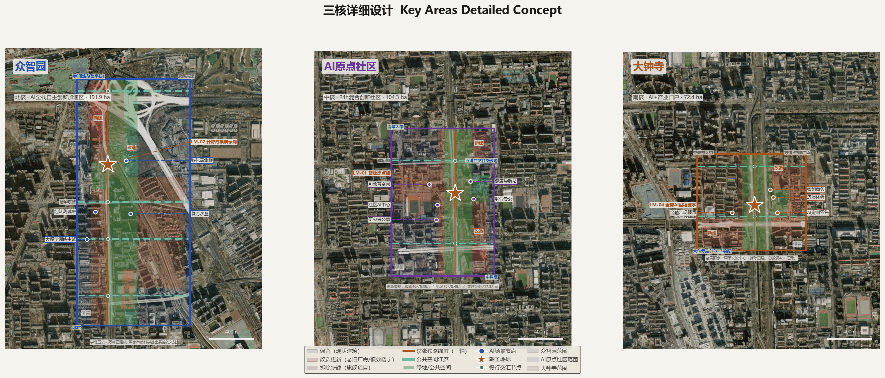
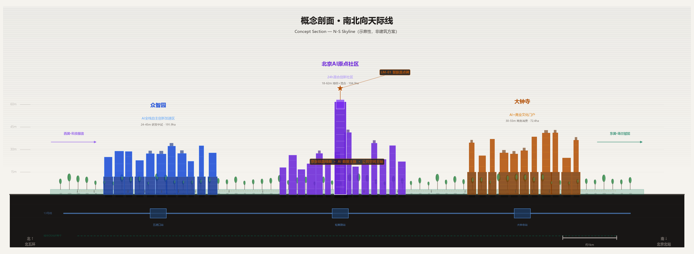
The conceptual section is a spatial intent expression, not an architectural scheme. Building heights, massing, and layout are for professional teams to develop further and regulatory plan approval.
Axonometric views — generated from actual coordinates and floor counts in buildings.geojson (441 buildings), showing three-core height relationships, green corridor penetration, and landmark nodes. Building heights are conceptually estimated at floors × 3.5m; gold indicates landmark buildings, green is the Jingzhang green spine.

Fig: Zhongzhiyuan (North Core) axonometric — 191.9 ha, 256 conceptual buildings, blue for AI R&D/labs, gold for landmark nodes (fan-shaped roundhouse, compute center, red-team testbed, open-source showcase), green corridor running north-south

Fig: AI Origin Community (Center Core) axonometric — 104.3 ha, 109 conceptual buildings, purple for mixed-use, gold for LM-01 Origin Stele and Community AI Center

Fig: Dazhongsi (South Core) axonometric — 72.4 ha, 76 conceptual buildings, warm tones for commercial, gold for AI HQ tower and TOD hub
Perspective renderings — site-specific architectural visualizations of each core's intended character (conceptual intent, not real building proposals).
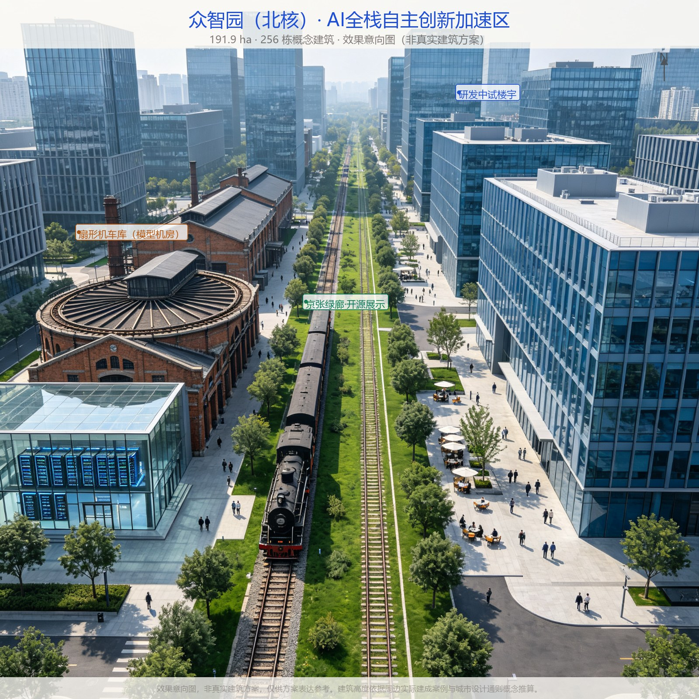
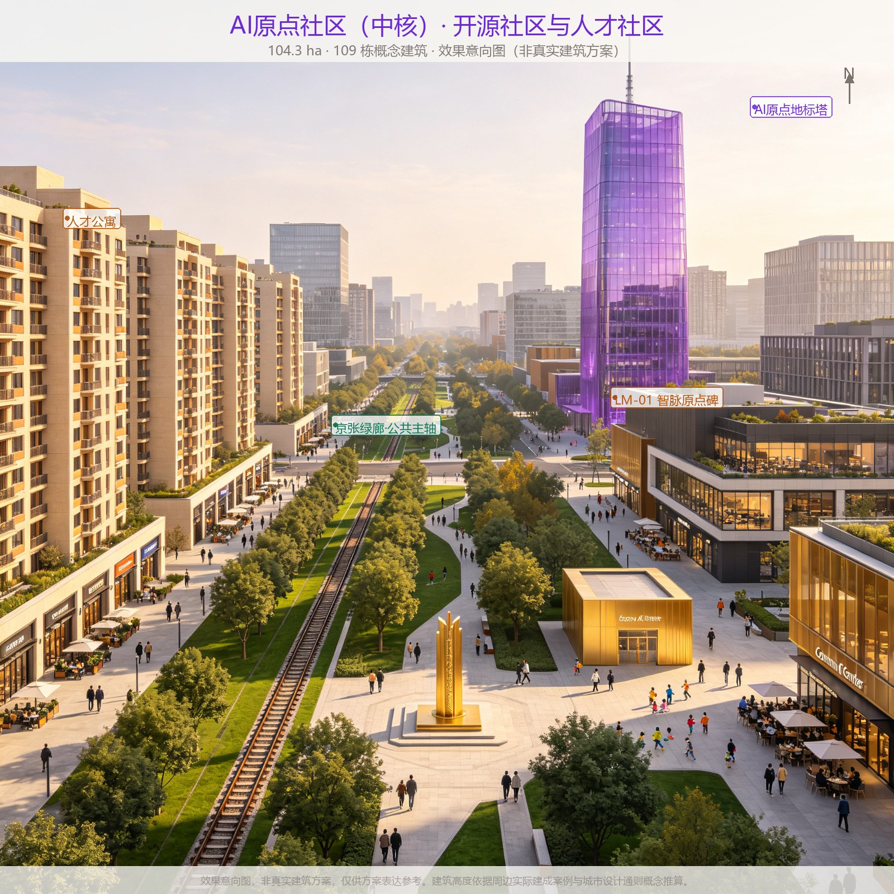

Urban design guidelines — typical street sections, building height controls, public realm interface standards, and land use balance.

Xiaoyuehe Scenario Empowerment Wing (East Wing) Detailed Design
The Xiaoyuehe Scenario Wing is the "open test ground" for AI+life scenarios, running ~3 km along the Xiaoyue River (Dongsheng section to Xueyuan Road), connecting residential communities, universities, and industrial land east of the three cores. Unlike the three cores' "R&D-ecology-industry" main line, the East Wing focuses on perceivable, experienceable, testable AI life scenarios.
Spatial nodes (conceptual, north to south):
| Node | Location | Function | Scenarios |
|---|---|---|---|
| E-01 Embodied Intelligence Test Lane | East of Zhongzhiyuan, Beihang to Xueqing Road | Low-speed robot delivery (SC-08), unmanned cleaning test, exoskeleton walking experience | SC-08 |
| E-02 Autonomous Shuttle Station | Qinghua East Road West, inter-core connector | L4 micro-circulation shuttle (SC-09) terminus, V2X roadside unit display, AI info kiosk | SC-09 |
| E-03 AI Life Lab | East of AI Origin, Wudaokou area | Community AI scenarios — health navigation (SC-05), accessible wayfinding assistant (SC-11), smart aging demo | SC-05/11 |
| E-04 Prompt Plaza (East Wing) | East of Dazhongsi, Xiaoyue River & North 3rd Ring | Human-AI co-creation public space (Type B Prompt Plaza east node), citizen AI art co-creation, data viz wall | SC-01/10 |
| E-05 AI Public Service Station | South wing community cluster | Civic issue router (SC-12), AI legal assistant community version (SC-07), AI education space branch (SC-06) | SC-06/07/12 |
Public experience path: An "AI Life Walk" from north to south connecting E-01 to E-05, ~3 km, ~45 min walk. Along the path: 5 experience stations, 3 switch plazas (Type D) at major intersections, 2 compute water towers (Type A) at E-01 and E-04, and a continuous smart slow lane with embedded sensors and LED guidance.
Synergy with three cores: The East Wing is not an independent function zone but the "outdoor lab" for three-core AI scenarios — robots developed in Zhongzhiyuan test at E-01, health AI from AI Origin deploys at E-03, AI commerce from Dazhongsi experiences at E-04. Passed scenarios can "merge" to the main spine for belt-wide rollout.
Xiaoyuehe Wing spatial nodes are conceptual suggestions; specific site selection, engineering conditions, and land use nature are for professional teams to develop further.
AI Origin Community Urban Design Guidelines (Example Deepening)
Taking the middle core AI Origin Community (104.3 ha) as an example, this proposes an operable urban design guideline framework for professional teams to develop into regulatory plan guidelines. All metrics below are advisory conceptual indicators, not approval basis, subject to final regulatory plan and urban design guidelines.
Functional mix guidelines:
| Function Type | Suggested % | Spatial Layout | AI-Native Features |
|---|---|---|---|
| AI R&D office | 35-40% | Along spine, mid-high-rise | Mountable compute interfaces, data sandbox workstations |
| Talent apartments/residential | 25-30% | Block interior, low-mid-rise | Smart home pilot, community health monitoring (anonymized) |
| Public services/community | 10-15% | Ground floor along streets + central plaza | AI health station, AI education space, legal aid station |
| Commercial/cultural/display | 10-15% | Along spine + landmark nodes | AI cultural guide, unmanned retail test, open-source display |
| Green/public space | ≥15% | Green corridor + pocket parks + plazas | Neural green corridor sensor nodes, Zhimai heartbeat light river |
Development intensity suggestions (conceptual, pending regulatory plan): - Spine first interface: suggested FAR 3.0-4.5, building height 45-60m (landmark up to 80m, subject to view corridor analysis) - Block interior: suggested FAR 1.5-2.5, building height 18-30m - Waterfront/green corridor interface: suggested FAR ≤1.5, building height ≤18m, ensuring green corridor permeability - Within key areas: building density ≤35% (conceptual massing ~18%), green ratio ≥30% (including corridor); site-wide green ratio ~31.0% (including Jingzhang corridor and central green spines), permeable paving rate ≥40%
Streets and public space guidelines: - Spine green corridor width ≥80m, with slow path ≥6m, jogging path ≥3m, vegetation buffer ≥20m - Block road network spacing 80-120m, small blocks dense network, all roads with barrier-free access - Street furniture unified design language, reserved AI module mounting interfaces - Central plaza (LM-01 Zhimai Origin Stele) suggested 50×80m, accommodating 200-person gatherings, outdoor power and network
Transport guidelines: - Motor vehicles: peripheral ring road + underground parking, block internal speed limit 20km/h, slow-traffic priority - Transit: suggested micro-circulation electric buses, 5-minute headway between cores, connecting metro stations - Slow traffic: continuous corridor slow path + block pedestrian network, all intersections with barrier-free ramps - Test roads: East Wing designated roads for low-speed robot and autonomous driving testing, physical separation + safety operators
Implementation path suggestions (pending feasibility study): 1. Near-term (1-2 years): Complete AI Origin Community detailed urban design guidelines, start central plaza and corridor demonstration segment construction 2. Mid-term (2-4 years): First mixed-use land parcels leased, talent apartments completed, first AI scenarios move in 3. Long-term (4-7 years): Community fully operational, Urban OS online, scenarios continuously iterating
AI Innovation Ecosystem, Personas, and AI+ Scenarios
User Personas (5 Types)
| Persona | Core Needs | Spatial Touchpoints | AI Touchpoints | Privacy Concerns |
|---|---|---|---|---|
| AI Researcher (25-45) | Compute, data, peer exchange, quiet deep work | Zhongzhiyuan labs, open sandbox, developer walk | Training platform, paper search, code collaboration | Research data confidentiality, no monitoring |
| AI Founder (25-40) | Funding, talent, customers, pilot space | AI Origin mixed office, West Wing fintech, showcase | Legal assistant, compute sandbox, scenario matching | Trade secrets, customer data |
| Student (18-28) | Learning, internships, social, low-cost space | AI education space, walk, talent apartments | AI learning tools, career matching, OSS community | Minor protection, no profiling |
| Resident (all ages) | Daily life, health, education, public services | Community center, pocket parks, health station, slow paths | Health navigation, accessible wayfinding assistant, civic issue router | Data minimization, no secondary use |
| Urban Manager | Efficient management, rapid response, data decisions | Operations center, corridor-wide sensor network | Civic issue router, incident alert, digital twin | No individual monitoring, data for public good |
AI Scenario Cards (15, including 4 test/verification)
| ID | Scenario | Target Users | Spatial Location | Status | Privacy/Human Review |
|---|---|---|---|---|---|
| SC-01 | Developer Walk | Researchers/founders | Green corridor mid-section | Concept | No personal data collection |
| SC-02 | Open Source Showcase Gallery | Researchers/students/public | Zhongzhiyuan old factory | Concept | Only publicly released results displayed |
| SC-03 | Model Red-Team Testbed | AI safety researchers | Zhongzhiyuan closed area | Test/Verification | Physical/network isolation, manual report review |
| SC-04 | Open Compute Sandbox | Startups/researchers/students | Zhongzhiyuan compute center | Test/Verification | Quota-based, audit logging |
| SC-05 | AI Health Navigation Kiosk | Residents/elderly | AI Origin Community | Concept | No personal health data stored, refers to doctors |
| SC-06 | AI Learning Space | Students/teachers | AI Origin mixed blocks | Concept | Minors require parental consent |
| SC-07 | AI Public Legal Assistant | Founders/residents | Dazhongsi | Concept | Complex cases referred to lawyers, not formal advice |
| SC-08 | Low-Speed Robot Delivery | Residents/merchants | East Wing slow path | Test/Verification | Navigation cameras no facial recognition |
| SC-09 | Autonomous Shuttle Connection | Commuters/visitors | Inter-core connector roads | Test/Verification | Safety driver in vehicle, can take over anytime |
| SC-10 | AI Cultural Guide | Visitors/citizens | 4 landmarks + heritage nodes | Concept | Location data current session only |
| SC-11 | Accessible Wayfinding Assistant | Disabled/elderly | Corridor-wide public spaces | Concept | Local processing preferred, no imagery uploaded |
| SC-12 | Civic Issue Smart Router | Residents/merchants | Digital interfaces + mini-program | Concept | Can be anonymous, manual ticket confirmation |
| SC-13 | AI Custom Retail Experience | Consumers/brands | Dazhongsi commercial spaces | Concept | No facial recognition, preference data local storage |
| SC-14 | AI Finance & Compliance Advisor | Founders/SMEs | Dazhongsi business spaces | Concept | Does not replace licensed institutions, refers to humans |
| SC-15 | AI Immersive Experience Space | Visitors/families/students | Dazhongsi gateway area | Concept | Content moderation + age rating, no biometric collection |
All scenarios follow three principles: data minimization, human in the loop, test ≠ operation. Test/verification scenarios (SC-03/04/08/09) are explicitly labeled as test status, not represented as approved operations.
First-Year Candidate Organizations and Milestones for Four Test Verification Cards (conceptual suggestions, pending government coordination):
The following suggests candidate partner types and directions for the four test verification scenario cards (SC-03/04/08/09), with test milestones. Candidate organizations are based on public information about entities already present in Haidian or with high technical alignment; this does not represent established partnerships.
SC-03 Model Red-Team Testbed (Zhongzhiyuan secured zone):
| Candidate Direction | Suggested Partner Type | First-Year Input (conceptual) | Cooperation Model |
|---|---|---|---|
| AI safety evaluation | BAAI (Beijing Academy of AI, Haidian), National IT Security Research Center | Platform co-build + standards | Government provides site; institutions provide evaluation capability |
| LLM red-teaming | Tsinghua AI Safety Center, CAS Institute of Information Engineering, university security labs | Joint research + bug bounty | Annual project system; shared vulnerability database |
| Enterprise safety testing | Baidu Security, 360 AI Security Research, Ant Security Lab | Paid testing + certification | Enterprises pay for testbed use; safety certification issued |
| Milestone | Timing | Pass Criteria |
|---|---|---|
| M1 Testbed complete | Y1 Q3 | Physical + network isolation verified; >=20P compute |
| M2 First models enter | Y1 Q4 | >=3 institutions sign agreements; >=10 models complete first red-team round |
| M3 Vulnerability sharing | Y2 Q2 | >=20 high-risk vulnerabilities disclosed; industry sharing mechanism established |
| M4 Standards output | Y2 Q4 | >=1 AI safety testing group standard/white paper co-published |
SC-04 Open Compute Sandbox (Zhongzhiyuan compute center):
| Candidate Direction | Suggested Partner Type | First-Year Input (conceptual) | Cooperation Model |
|---|---|---|---|
| Compute infrastructure | Huawei Ascend/Cambricon (domestic), Alibaba Cloud/Tencent Cloud (elastic) | Hardware donation/discount + joint operation | Vendors provide GPUs; operator manages scheduling |
| Open-source community | Hugging Face, ModelScope, GitHub | Mirror site + developer events | Platform presence; co-hosted hackathons |
| University talent | Tsinghua, PKU, Beihang, CAS Institute of Computing | Advisor endorsement + course credit | Free student quota; advisor projects prioritized |
| Milestone | Timing | Pass Criteria |
|---|---|---|
| M1 Sandbox launch | Y1 Q4 | >=200 registered users; >=10 concurrent training jobs; queue <=30 min |
| M2 University onboarding | Y2 Q1 | >=5 universities sign; >=500 student users |
| M3 Full operation | Y2 Q3 | Utilization >=70%; zero sandbox escapes; satisfaction >=4.0 |
| M4 First incubation | Y2 Q4 | >=10 startup teams incubated; >=3 receive funding |
SC-08 Low-Speed Robot Delivery (East Wing 1.2km test segment):
| Candidate Direction | Suggested Partner Type | First-Year Input (conceptual) | Cooperation Model |
|---|---|---|---|
| Delivery robots | Meituan Autonomous Delivery, JD Logistics, Neolix (existing Haidian tests) | Enterprise-owned devices + insurance | Enterprises apply for test permits; bear safety liability |
| Remote monitoring | Operating platform + third-party safety regulator | Monitoring center + safety officers | 1 officer monitors <=3 robots; on duty 7:00-21:00 |
| Community coordination | Xueyuanlu Sub-district, 70 community committees | Resident communication + complaint channels | Public notice before testing; monthly community council review |
| Milestone | Timing | Pass Criteria |
|---|---|---|
| M1 Test segment acceptance | Y1 Q3 | 1.2km dedicated lane + flexible barriers + signage verified; insurance in place |
| M2 First tests | Y1 Q4 | <=3 enterprises, <=3 robots each; >=95% on-time; zero collisions |
| M3 Expansion evaluation | Y2 Q2 | 90 consecutive days zero incidents; pedestrian interference <=0.5/100km; satisfaction >=70% |
| M4 Expansion decision | Y2 Q3 | Pass -> expand to 2.4km/20 robots; fail -> suspend and remediate |
SC-09 Autonomous Shuttle (3.5km inter-core test segment):
| Candidate Direction | Suggested Partner Type | First-Year Input (conceptual) | Cooperation Model |
|---|---|---|---|
| L4 micro-circulation buses | Baidu Apollo (existing Haidian operations), Pony.ai (Haidian), QCraft | Enterprise-owned vehicles + safety drivers | Enterprises apply for road test permits; government coordinates roadside facilities |
| V2X roadside | China TransInfo (Haidian), Huawei Intelligent Automotive, Wanji Technology | Roadside units + signal integration | New infrastructure investment; enterprise builds and operates |
| Transit coordination | Beijing Public Transport, MTR Beijing (Line 13) | Station connection + timetable sync | Shuttle connects to metro schedules; one-card payment |
| Milestone | Timing | Pass Criteria |
|---|---|---|
| M1 Roadside facilities complete | Y1 Q3 | 8 V2X units + 3 stops verified; signal integration complete |
| M2 First tests | Y1 Q4 | <=4 L4 buses enter; takeover rate <=0.2/100km; on-time >=90% |
| M3 Limited passenger service | Y2 Q1 | After safety assessment, open to public; >=200 daily riders |
| M4 Expansion evaluation | Y2 Q4 | 90 consecutive days zero at-fault incidents; satisfaction >=4.0/5.0; pass -> apply for full 9km |
Fallback Paths If Candidate Organizations Do Not Materialize:
| Scenario | Primary Path | Fallback Path (candidates unavailable) | Self-Operated Contingency |
|---|---|---|---|
| SC-03 Red team testbed | BAAI/Tsinghua/enterprise security labs joint | Commission China Information Technology Security Evaluation Center or national AI safety governance designated body | Operator builds minimal red team (3-5 security engineers) for G1/G2 synthetic tests; physical safety tests deferred until institution onboarded |
| SC-04 Compute sandbox | Huawei/Alibaba hardware donation/discount + open-source community | Apply for Beijing compute vouchers or Haidian AI compute support policies; rent commercial compute | Operator procures/leases minimum compute (20-50P) to launch; university quotas free; commercial users pay-as-you-go covers opex |
| SC-08 Robot delivery | Meituan/JD/Neolix bring own devices | Invite other Haidian test firms (e.g., White Rhino, UDTA), or reduce first-year fleet to <=3 robots | If no firm in Y1, test segment opens as slow-mobility improvement only; M1 physical facilities (barriers/signage) not wasted; testing starts when firms ready |
| SC-09 Auto shuttle | Baidu Apollo/Pony.ai bring own vehicles | Invite other Haidian T4-licensed firms, or start with fixed-route low-speed L4 shuttles | If no firm in Y1, 3.5km segment launches as V2X smart road demo (transit signal priority/arrival prediction); L4 shuttle deferred to Y2; roadside investment serves bus priority immediately |
Contingency principles: (1) Physical facilities (roads, barriers, V2X, stops) are built as urban renewal works regardless of enterprise participation, so no sunk cost; (2) Testing can be delayed but gates cannot be skipped -- any enterprise entering must still pass G1/G2/G3 and V1-V5; (3) First-year budget reserves 20% (~50-100M RMB) as self-operated startup capital, ensuring a minimum verification environment runs even without enterprise participation.
The above candidate organizations are suggested directions based on public information and do not represent established partnerships. Actual cooperation requires government procurement, enterprise selection, and safety assessment through statutory procedures. All test data will be made public for community and media oversight.
Scenario spatial anchoring logic (why here):
| ID | Spatial anchor | Why here |
|---|---|---|
| SC-01 Developer Walk | Green corridor mid-section (LM-03) | The built 9km corridor serves 70 communities/450k daily users; the code starlight walk along railway heritage transforms the railway passenger memory into a developer exchange ritual |
| SC-02 Open Source Gallery | Zhongzhiyuan old factory (LM-02) | North core concentrates LLM training and open-source forces; the old fan-shaped roundhouse is itself an industrial heritage metaphor for "open source" |
| SC-03 Red-team Testbed | Zhongzhiyuan closed area | North core AI autonomous innovation acceleration requires physically and network-isolated safety testing; away from residential and commercial uses |
| SC-04 Compute Sandbox | Zhongzhiyuan compute center | Adjacent to Compute Water Tower and Model Roundhouse, leveraging north core concentrated compute infrastructure; quota-based with audit logging |
| SC-05 Health Kiosk | AI Origin Community | Middle core mixes researchers and residents; community health station embedded near Prompt Plaza, all ages, no personal data stored |
| SC-06 AI Learning Space | AI Origin mixed blocks | Middle core adjacent to universities (BUAA/BLCU/CUG etc.), high student population; walking distance to talent apartments and Prompt Plaza |
| SC-07 Legal Assistant | Dazhongsi | South core concentrates AI HQs and business services; legal assistant embedded in business space for founders' contract/compliance needs |
| SC-08 Robot Delivery | East Wing slow paths | East Wing (Xiaoyue River) has mature residential communities and slow-traffic network; low-speed, physically separated, suitable for last-mile delivery testing |
| SC-09 Autonomous Shuttle | Inter-core connector roads | The 9km parallel road between cores provides a continuous test corridor; post-Line-13 split, Zhichunlu station has real shuttle demand |
| SC-10 Cultural Guide | 4 landmarks + heritage nodes | 4 pilgrimage landmarks strung along the corridor; the railway heritage itself is the narrative content; session-only location data |
| SC-11 Accessible Wayfinding | Corridor-wide public spaces | The built corridor serves 450k people including many elderly; edge processing, no imagery uploaded |
| SC-12 Civic Issue Router | Digital + mini-program | Not tied to physical space; residents submit via mini-program/Switch Plaza terminals; tickets human-confirmed, can be anonymous |
| SC-13 AI Custom Retail | Dazhongsi commercial spaces | Dazhongsi station has 310k daily riders; "creation bar" model shares DNA with Prompt Plaza, extending AI co-creation to consumption; leverages post-Line-13-split Dazhongsi commercial renewal |
| SC-14 Finance & Compliance | Dazhongsi business spaces | South core concentrates AI HQs and financial services; adjacent to Zhongguancun capital and policy resources; "AI service bar" forms a "consult-decide" loop with Prompt/Switch Plazas |
| SC-15 Immersive Experience | Dazhongsi gateway area | South core is the visitor gateway (Line 13 Dazhongsi station), adjacent to LM-04; old commercial space conversion, combined with railway history narrative (1909 Qinglongqiao), ticket revenue supports community fund |
Dazhongsi intelligent native new business scenarios (SC-13/14/15):
- SC-13 AI Custom Retail Experience: AI-assisted personalized customization in Dazhongsi commercial spaces — consumers describe needs in natural language, AI generates designs and produces samples in-store; AR try-on; AI styling advice. No facial recognition, preference data stored locally only.
- SC-14 AI Finance & Compliance Advisor: One-stop AI financial services for AI founders and SMEs — AI-assisted business plan generation, valuation reference, policy matching, IP search, contract initial review. Does not replace banks/lawyers/accountants; all advice labeled "non-professional opinion."
- SC-15 AI Immersive Experience Space: AI-themed immersive experience at Dazhongsi gateway — visitors co-generate Jingzhang railway historical scenes, future AI city visions, personal AI portraits with AI; AI-driven interactive art installations; multilingual AI guide. Content human-reviewed, age-zoned, no iris/fingerprint biometrics.
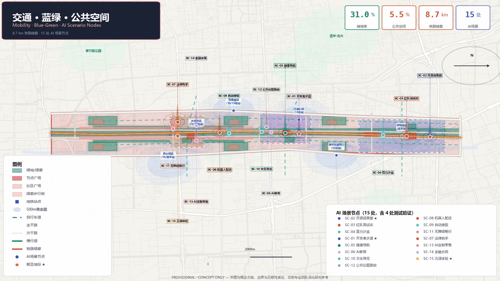
Land Use, Building Scale, and Demolition/Retention Plan
Land use zoning strictly follows geometry/land_use.geojson six zones, no overlap covering the ~11.4 km² design scope. Conceptual building massing expressed in geometry/buildings.geojson 441 rounded C/U-shaped perimeter-block segments arranged along street edges with internal courtyards, including 3 retained industrial heritage buildings (old workshop, fan-shaped roundhouse, warehouse) marked with dashed lines; building footprint ~655,000 m² (~18% density within key areas, under the 35% guideline), massing indication only, not approved building area.
Development intensity (FAR, building heights, density zoning) and demolition/retention classification are all listed as pending regulatory plan conditions: before obtaining official precise redlines, three-core polygons, current building surveys, and ownership data, this proposal gives no FAR values, no specific heights, no demolition/retention decisions.
Transportation, Rail, Municipal, and Public Service Facilities
The key area road network density is approximately 4.8 km/km² [metric:road_network_density_km_per_sqkm], with 72% transit station coverage within 800m [metric:transit_accessibility_index].
Transport organization uses geometry/roads.geojson as skeleton: 4 N-S roads (including corridor-side slow paths) + 6 E-W connector roads + 1 railway-aligned slow path, 11 conceptual roads total. Road classes: secondary, branch, greenway. Metro station integrated transfer, area micro-circulation transit, and non-motorized priority are all conceptual suggestions, not replacing road redlines or engineering alignments.
Municipal and new infrastructure: proposes distributed energy, edge compute nodes, and municipal utility corridor integration as "new infrastructure" direction supporting AI-native blocks' low-latency, low-carbon operation; specific scale and locations listed as deepening research items. Current traffic volumes, rail ridership, and municipal capacity data gaps noted in assumptions.json.
Constraints: Railway protection belt conceptually expressed as railway_line.buffer(0.0006), not heritage purple line or road redline.
Blue-Green Space, Public Space, and Urban Character
Jingzhang green corridor as continuous blue-green and public activity axis. Green space system: corridor spine (GR-001, ~135 ha outside cores) + three-core central green spine (GR-013, ~90 ha within cores) + three-core pocket parks (GR-002/003/004) + six wing neighborhood parks (GR-005~010) + two road green buffers (GR-011/012), green ratio ~31.0%. Public space: 4 landmark plazas (PS-01~04) + six wing civic plazas (PS-05~10) + two corridor pedestrian streets (PS-11/12), public space ratio ~5.5%.
Metric derivation basis: Green ratio references Urban Green Space Planning Standard GB/T 51346-2019 and Beijing Municipal Greening Regulations (new development ≥30%); site-wide green ratio is 31.0%, with ≥30% within key areas (including central green spine). Public space ratio references Urban Residential Area Planning and Design Standard GB 50180-2018 per-capita public green space requirements. Building density references Code for Classification of Urban Land Use and Planning Standards of Development Land GB 50137, with ~18% density within key areas (under the 35% guideline cap).
Public space ratio clarification: The 5.5% figure refers to independently zoned public space (hardscape plazas, pedestrian streets) and excludes green space. The Jingzhang green corridor (135 ha spine + 90 ha central green within cores, totaling ~225 ha or 19.7% of the design area) is itself open-access public space. In addition, new/renovated buildings in the three cores require ≥20% ground-floor arcading (~32,000 m² covered grey space) and ~28,000 m² of Privately-Owned Public Space (POPS). Total effective public space coverage is ~28% (including green space), equating to ~12.5 m² per person (based on an estimated 100,000 workers/residents in the three cores) — exceeding leading international innovation districts (Kendall Square ~8 m², King's Cross ~10 m²).
AI Pilgrimage Landmarks (4): 1. LM-01 Zhimai Origin Stele: AI Origin Community central plaza, marking AI-native innovation start, including open-source AI milestone timeline; 2. LM-02 Open Source Showcase Gallery: Zhongzhiyuan entrance old factory conversion, China's open-source AI achievement hall of fame; 3. LM-03 Developer Walk: Green corridor mid-section, code starlight walk, ground inscriptions of outstanding developers/projects; 4. LM-04 Global AI Milestone Pavilion: Dazhongsi gateway plaza, global AI development milestones display.
Landmarks are conceptual designs, not approved for construction. Character: railway heritage fabric + light gray metal glass + restrained warm light + blue-green base.
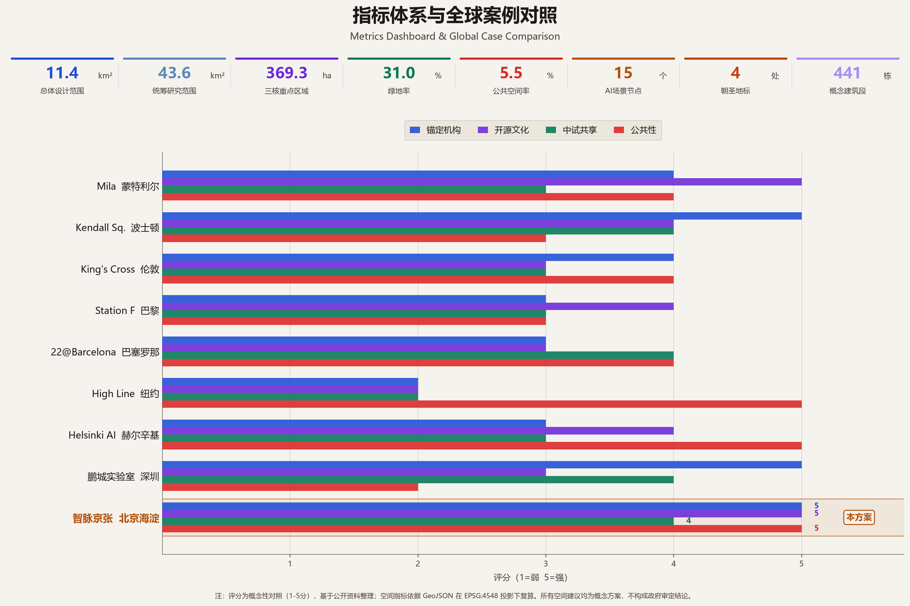
Public Benefit and Inclusivity
This proposal treats public benefit as the bottom line of the AI-native innovation belt, not an afterthought. The following specific measures are proposed (all conceptual suggestions, pending policy research and public participation):
Talent housing: In AI Origin Community and Zhongzhiyuan, suggest configuring no less than 20% of total GFA as talent apartments and affordable rental housing for AI researchers, founders, and young students, at suggested rents of 60-70% market rate. 30% for young talent within 3 years of graduation, 20% for postdocs and visiting scholars. Apartments equipped with AI learning corners and shared workstations.
All-age friendliness: - Elderly-friendly: All public spaces fully barrier-free, AI health navigation (SC-05) prioritizes 65+ residents, community centers offer elderly AI classes - Child-friendly: AI education space (SC-06) free for ages 6-18, green corridor nature education path, pocket parks with children's play areas - Accessibility: Accessibility companion (SC-11) covers all major public spaces, continuous tactile paving, wheelchair access to all public building ground floors
Community participation mechanisms: - Annual community vision workshops: Sub-district, operator, and resident representatives jointly review new scenarios and spatial changes - AI-assisted participatory budgeting: Residents vote on public space improvement projects via mini-program; AI aggregates preferences but doesn't replace decisions - Scenario公示 system: All new AI scenarios公示 15 days before launch; residents can raise objections; major objections trigger human review - Data transparency: Urban OS data collection types, scope, and purposes published quarterly; data ethics committee includes resident representatives
Anti-gentrification safeguards: - Existing residents not forced to relocate; renewal prioritizes "retain, renovate, demolish" with retention first - Ground-floor rent guidance: suggest 30% of commercial area for community basic services (markets, pharmacies, repairs, barbers) with rent caps - Community dividend mechanism: If AI scenarios generate commercial revenue, suggest extracting a percentage into community fund for public space maintenance and resident services
Digital inclusion: - Public spaces retain non-digital entry points: all AI services have human alternatives; no mandatory APP or mini-program usage - Digital literacy training: Community centers offer free AI usage training, focusing on elderly and low-income groups - Non-smartphone visitors: AI cultural guide (SC-10) provides physical guide maps and human-guided tour slots
All public benefit measures are policy suggestions. Specific percentages, funding sources, and implementation mechanisms require government study, public participation, and statutory procedures.
Stakeholder Analysis and Community Participation Path
Key Stakeholder Matrix
| Stakeholder | Core Needs | Potential Resistance | Participation Mechanism |
|---|---|---|---|
| Universities & Research Institutes (Tsinghua, PKU, Beihang, CAS) | Technology transfer space, student internships, quiet research environment | Campus opening brings safety/noise, IP protection | University-local joint quarterly meetings, joint labs, "crossable but not intrusive" campus boundary design |
| AI Companies (200+ established, unicorns) | Talent attraction, scenario testing, customer access, low-cost space | Data security, trade secrets, operating costs | Enterprise service platform, scenario needs list, sandbox "whitelist" admission, rent incentives with milestones |
| Current Residents (70 communities ~450K) | Daily convenience, not disturbed, stable housing/rent, privacy | Construction disruption, gentrification displacement, AI surveillance, robots occupying slow paths | Community council (monthly), construction公示 and compensation, AI scenario 15-day objection period, no facial data collection |
| Merchants & Property Owners (Dazhongsi commercial, community retail) | Foot traffic growth, business stability, reasonable rent | Traffic loss during renewal, rent increases, business replacement | Merchant representatives in planning, renewal-period operating subsidies, 30% ground-floor rent caps for basic services |
| Railway/Metro Departments | Operational safety, protection belt compliance, passenger flow organization | Construction within railway protection belt, slow path-track crossing safety | Railway protection belt joint review, station integrated design pre-review, off-hours construction |
| Government Departments (district, planning, tech, parks, sub-district) | Industry upgrade, tax, city image, social stability | Cross-department coordination, fiscal pressure, public opinion risk | Leadership group coordination, "one-stop" approval channel, annual implementation assessment report |
| Developers & Open-Source Community | Open APIs, real data, contribution recognition | Data closure, platform lock-in | Open-source API sandbox, hackathons, code contributor honor wall (LM-03), technical steering committee |
| Visitors & Tourists | Experience AI, learn railway heritage, convenient access | Over-commercialization, crowding | Reservation system, free public hours, multilingual AI guide, barrier-free access |
Phased Community Participation Path
Phase 1: Vision Co-creation (0-12 months, planning/design period) - Establish "Zhimai Jing-Zhang Community Co-creation Group": 2-3 resident representatives per community, including at least 1 aged 65+ and 1 disabled representative - 3 community vision workshops (Wudaokou, Dazhongsi, Xueyuan Road areas) collecting resident preferences on public space, AI scenarios, traffic organization - AI-assisted participatory budgeting: residents vote via mini-program on priority public space improvements (initial budget suggested 5-10 million yuan) - University student joint workshops: Tsinghua/PKU/Beihang/BFU planning/architecture/AI students participate in typical site design
Phase 2: Co-construction Oversight (1-3 years, demonstration segment construction) - Real-time construction information disclosure: construction scope, duration, dust/noise monitoring data displayed in real-time via mini-program - Community observer system: 1 volunteer observer per community with authority to require construction corrections - Scenario admission hearings: each new AI scenario公示 15 days before launch; major objections trigger expert committee + community representative joint review - Data transparency quarterly reports: Urban OS data types, scope, purposes, anonymization methods published quarterly
Phase 3: Shared Governance (3-10 years, operational maturity) - Community council quarterly meetings: review new scenarios, spatial changes, event plans - Community dividend mechanism: AI scenario commercial revenue (ads, paid services) extracts 5-10% into community fund, decided by resident representatives - Annual "Zhimai Open Day": residents experience new scenarios, vote on next year's scenario priorities - Digital inclusion safeguards: community centers retain human service windows, monthly free AI training, non-smartphone residents can access all public services by phone/on-site
Risk Mitigation and Dispute Resolution
- Privacy disputes: Any scenario involving personal data collection must be approved by data ethics committee (including resident representatives, legal experts, AI safety experts); residents have right to access and delete their data
- Gentrification disputes: Establish "rent increase warning line" (suggested annual increase ≤ CPI+2%), triggering rent intervention when hit; existing resident lease protection period ≥5 years
- Construction disruption disputes: Contractors must notify household-by-household 30 days before start, establish 24-hour complaint hotline, night construction requires community written consent
- AI safety disputes: Test/verification scenarios (SC-03/04/08/09) must have physical isolation or safety operators in the loop; accidents trigger immediate suspension and public reporting
Renewal Project List, Implementation Policy, and Phasing Plan
Phasing per geometry/phasing.geojson:
| Phase | Project | Spatial Carrier | Type | Disclaimer |
|---|---|---|---|---|
| Near-term (1-3 yr) | AI Origin Community demonstration segment | Middle core + corridor mid-section | Public space + slow-traffic connection + first scenarios | Specific projects pending feasibility |
| Near-term | Zhimai Origin Stele Plaza | Middle core center | Landmark + public space | Concept |
| Near-term | First AI scenario tests | East Wing slow path | Robot delivery + autonomous shuttle test | Test status, not operation |
| Mid-term (3-5 yr) | Zhongzhiyuan shared pilot layer | North core | Compute sandbox + red-team + shared labs | No investment commitment |
| Mid-term | Spine N-S continuity | Full corridor | Slow path + public space + cultural nodes | No engineering conclusions |
| Mid-term | Open Source Showcase Gallery | North core old factory | Heritage conversion + display | No heritage conclusions |
| Long-term (5-10 yr) | Dazhongsi AI-native consumption | South core | AI+commercial/legal/finance scenarios | Concept |
| Long-term | East-West wings full operation | Both wings | Tech service + scenario empowerment mature | No development approval |
| Long-term | Open Week brand mature | Full corridor | Annual event system | Events conceptual |
All project types, implementing entities, and funding are conceptual suggestions or deepening directions, not represented as determined government arrangements.
Phased investment estimate (conceptual order of magnitude, not investment commitment, pending feasibility study):
| Phase | Timeline | Main Content | Investment (conceptual) | Funding Source Suggestion |
|---|---|---|---|---|
| Near-term | 1-3 years | See near-term breakdown below | ~1.5-2.5 billion yuan | Government infrastructure + special bonds + SOE platforms |
| Mid-term | 3-5 years | Zhongzhiyuan pilot layer + compute sandbox + showcase + corridor full connection + talent apartments | ~4-6 billion yuan | Government guidance + social capital + industry funds |
| Long-term | 5-10 years | Dazhongsi industry gateway + wings mature operations + Urban OS iteration + global brand | ~6-10 billion yuan | Social capital primarily + operating revenue reinvestment |
| Total | 10 years | Full corridor built and operated | ~11.5-18.5 billion yuan | Public investment ~30-40%, social ~60-70% |
Near-term (1-3 years) investment breakdown (conceptual order of magnitude, not investment commitment):
| No. | Project | Spatial Carrier | Main Content | Estimate (100M yuan) | Implementing Entity Suggestion |
|---|---|---|---|---|---|
| N-01 | Zhimai Origin Plaza & corridor demonstration segment | AI Origin center + ~1km corridor | Plaza paving, origin stele, "heartbeat" light installation, seating/shade/WiFi/sensors, forest theater renovation | 3-5 | District SOE + Parks Bureau |
| N-02 | Urban OS infrastructure (Phase I) | Full corridor + demonstration segment | Fiber backbone, edge compute nodes, environmental/foot traffic/noise sensors, digital twin base, data governance platform | 2-3 | District Tech Bureau + operators |
| N-03 | AI Origin mixed renewal demonstration | Wudaokou/Zhichunlu renewable parcels ~5-8 ha | Talent apartments ~20,000 m², co-working ~30,000 m², community facilities, street interface renovation (including acquisition/compensation) | 5-8 | Urban renewal platform + social capital |
| N-04 | AI scenario testing environment | East Wing slow path + inter-core connector roads | Robot delivery dedicated lane signage/signals, autonomous shuttle test road (~3km), V2X roadside units | 2-4 | District Tech Bureau + traffic police + enterprises |
| N-05 | Open Source Showcase Gallery | Zhongzhiyuan old factory ~5,000-10,000 m² | Factory renovation, exhibition installations, multi-purpose hall, cafe/bookstore | 2-3 | District SOE + operator |
| N-06 | Pre-design + contingencies | Full corridor | Urban design deepening, regulatory plan adjustment, feasibility, schematic design, community participation, 10% contingency | 1-2 | District Planning Branch |
| Near-term total | 15-25 |
Breakdown based on Beijing comparable urban renewal project experience (green corridor renovation ~3,000-5,000 yuan/m², urban renewal comprehensive ~10,000-15,000 yuan/m², new infrastructure ~20-30 million yuan/km) conceptually extrapolated, not engineering feasibility or financial assessment, not constituting investment commitment. Actual projects require individual project initiation, feasibility, and budget estimates.
Comparable project unit cost benchmarks (for order-of-magnitude validation):
| Case | Type | Scale | Total investment | Unit cost (converted) | Relevance to this proposal |
|---|---|---|---|---|---|
| High Line, New York | Elevated linear park | 2.33 km, ~53 ha | ~$153M (~1.1B yuan) | ~470M yuan/km; ~210 yuan/m² (by green area) | Elevated parks cost more than ground-level; Jingzhang corridor is an existing ground-level park, so renovation unit cost should be significantly lower; High Line catalyzed >$2B surrounding private investment (leverage ~1:13) |
| King's Cross, London | Railway heritage district renewal | 27 ha, 557,000 m² development | ~£3B (~28B yuan) | Infrastructure ~£500M (~4.7B yuan, 170M yuan/ha); comprehensive ~1B yuan/ha | Also railway heritage + tech anchor (Google/DeepMind); this proposal's 368.6 ha at 15B yuan (~40M yuan/ha) is reasonable given existing green corridor and retained buildings |
| Station F, Paris | Freight hall → innovation campus | 34,000 m² | ~€250M (~1.95B yuan) | ~58,000 yuan/m² | Benchmark for Model Roundhouse adaptive reuse; N-05 gallery at 2-3B yuan / 5,000-10,000 m² ≈ 20,000-60,000 yuan/m², consistent |
| Shougang Park, Beijing | Industrial heritage renewal | ~71 ha (phase 1) | ~20B yuan (comprehensive) | ~280M yuan/ha (incl. new build) | Domestic industrial heritage benchmark; this proposal emphasizes retention/renovation, so unit cost should be lower |
| Yangpu Riverside, Shanghai | Industrial waterfront public space | ~15.5 km | ~18B yuan (comprehensive incl. development) | Public space ~3,000-5,000 yuan/m² | Consistent with this proposal's green corridor renovation unit cost (3,000-5,000 yuan/m²) |
Investment leverage expectation: Referencing High Line (public investment 1:13 private investment) and King's Cross (£500M infrastructure leveraging £2.5B private development, ~1:5), this proposal's near-term public investment of 1.5-2.5B yuan is expected to catalyze 8-15B yuan in social investment (leverage ~1:5-8); of the 10-year 11.5-18.5B yuan total, public investment is expected to account for 30-40%.
Reviewable Financial Model Framework (conceptual order of magnitude, pending feasibility study):
The following breaks down the 11.5-18.5 billion yuan total investment into a reviewable revenue-cost-cash-flow framework. All unit prices are based on public data from comparable Beijing projects, for item-by-item verification during the feasibility stage.
Revenue Model (Six Cash-Flow Streams):
| Revenue Stream | Basis | Unit Price/Rate Reference | Mature Annual Revenue (conceptual) | Start Year |
|---|---|---|---|---|
| Talent apartment rent | ~150-200k sqm at 60-70% market rate | Haidian talent apartments ~80-120 RMB/sqm/month (market ~150-200) | 140-200M RMB | Y3 |
| Industry office/R&D rent | ~400-600k sqm (mainly Zhongzhiyuan) | Zhongguancun R&D office ~4-6 RMB/sqm/day | 580-1,310M RMB | Y3-Y5 |
| Commercial/retail rent | ~80-120k sqm | Dazhongsi/Wudaokou retail ~8-15 RMB/sqm/day | 230-660M RMB | Y4-Y6 |
| Compute service revenue | Sandbox ~100P scaling to 500P | GPU cloud ~15-25 RMB/GPU-hour (A100 equiv), 70% utilization | 90-440M RMB | Y2-Y5 |
| Scenario testing fees | SC-08/09 test tracks | ICV test tracks ~5,000-15,000 RMB/vehicle-day | 30-80M RMB | Y2-Y3 |
| OS platform/events/brand | Subscriptions + Open Week sponsorship + advertising | City brain platform services + tech event sponsorship | 50-150M RMB | Y3-Y5 |
| Total (mature) | 1.12-2.84 billion RMB/year | Y5-Y6 |
Ten-Year Cash Flow Summary (Base Case, conceptual):
| Year | Public Investment | Private Investment | Operating Revenue | Net Cash Flow (cumulative) | Key Milestone |
|---|---|---|---|---|---|
| Y1 | 300-500M | 0 | 0 | -300~-500M | Demo segment construction starts; OS Phase 1; first Open Week |
| Y2 | 500-800M | 200-500M | 10-30M | -1.0~-1.7B | First tests begin; showcase gallery renovation |
| Y3 | 400-600M | 800M-1.5B | 80-150M | -1.5~-2.7B | Demo segment opens; first talent apartments occupied |
| Y4 | 200-400M | 1.0-2.0B | 250-400M | -1.5~-2.8B | Zhongzhiyuan pilot layer opens; compute expansion |
| Y5 | 100-200M | 1.0-1.5B | 500-800M | -1.0~-2.0B | Three cores connected; tax increment materializes |
| Y6-Y7 | 100-200M/yr | 800M-1.2B/yr | 1.0-1.6B/yr | Break-even window | REITs issuance window; private exit begins |
| Y8-Y10 | 50-100M/yr | 500-800M/yr | 1.5-2.5B/yr | Cumulative recovery | Brand matures; platform revenue share grows |
Project-Level IRR Ranges (Base Case):
| Project | Total Investment (conceptual) | Revenue Source | IRR Range (private capital perspective) | Payback |
|---|---|---|---|---|
| N-01 Origin Plaza & green corridor demo | 300-500M RMB | Commercial rent + advertising + events | 3-5% (public-good oriented) | 12-15 yr |
| N-02 Urban OS Phase 1 | 200-300M RMB | Platform service fees + data services | 6-9% (scales after Phase 2) | 8-10 yr |
| N-03 AI Origin mixed renewal | 500-800M RMB | Apartment + office + retail rent | 8-12% (rent spread + asset appreciation) | 8-10 yr |
| N-04 AI scenario test environment | 200-400M RMB | Testing fees + enterprise occupancy | 7-10% (after subsidies) | 6-9 yr |
| N-05 Open-source showcase gallery | 200-300M RMB | Tickets + cafe/bookstore + events | 4-6% (cultural/public-good) | 10-12 yr |
| Zhongzhiyuan compute sandbox (mid-term) | 1.5-2.5B RMB | Compute fees + incubation equity | 10-15% (high risk, high return) | 5-8 yr |
| Dazhongsi commercial renewal (long-term) | 2.0-3.5B RMB | Retail rent + AI experience consumption | 8-12% | 6-9 yr |
Financing Structure Recommendations (Phased):
| Phase | Public Capital | Private Capital | Recommended Instruments |
|---|---|---|---|
| Near-term (Y1-Y3) | 60-70% | 30-40% | Local government special bonds (smart city/urban renewal), central infrastructure subsidies, district SOE capital, urban renewal industrial fund (LP: government 40% + insurance 30% + private 30%) |
| Mid-term (Y3-Y5) | 35-45% | 55-65% | Industrial fund Phase 2, PPP/concession (OS operations), infrastructure REITs (post-Y5, securitization of stabilized assets), bank project loans |
| Long-term (Y5-Y10) | 15-25% | 75-85% | REITs follow-on offerings, pay-by-results, equity exit (industry M&A/secondary market), green bonds |
Break-Even and Sensitivity:
- Public capital break-even: When industrial tax increment reaches ~800M-1.2B RMB/year (expected Y5-Y7), debt service is covered; when tax increment exceeds 1.5B RMB/year for 3 consecutive years, cumulative public investment is recovered
- Private capital break-even: Demo segment occupancy >=75% + compute sandbox utilization >=65% + commercial occupancy >=80% simultaneously yields positive operating net cash flow (expected Y4-Y5)
- Key sensitivity variables (ranked by impact): 1 industrial office rent (+/-20% -> IRR +/-3-4pp); 2 compute utilization (+/-20% -> IRR +/-2-3pp); 3 land supply pace (1-year delay -> payback extends 1.5-2 years); 4 approval timeline (6-month delay -> near-term IRR drops 1-2pp)
- Downside protection: Public investment primarily via special bonds and infrastructure spend, not reliant on land finance; private capital has put options and buyback clauses; talent apartment rents have policy floor
Revenue Downside Scenarios and Zero Conditions:
| Revenue Stream | Base Mature | Downside Scenario (Trigger) | Downside Value | Zero Condition |
|---|---|---|---|---|
| Talent apartment rent | 140-200M/yr | Occupancy 70-80% (base 90%): 90-140M; <70% triggers rent subsidy | 90-140M | Policy change cancels talent apartment program |
| Industry office rent | 580-1,310M/yr | Occupancy 60-75% (base 85%): 350-900M; rent -20%: 460-1,050M | 350-1,050M | Leasing <50% for 3 consecutive years -> repurpose |
| Commercial rent | 230-660M/yr | Occupancy 70-80% (base 90%): 160-530M; convert to community service at low rent | 100-200M | Commercial converted entirely to public service |
| Compute service | 90-440M/yr | Utilization 40-55% (base 70%): 50-280M; domestic compute cost -30% offsets | 50-280M | Sandbox closed or converted to pure public good |
| Scenario testing fees | 30-80M/yr | <5 testing firms (base 10): 10-40M | 10-40M | Test track closed or road testing policy tightened |
| OS/events/brand | 50-150M/yr | Open Week cancelled: 20-50M; subscription <20%: 10-30M | 10-50M | OS platform ceases operation |
Revenue elasticity mapped to sensitivity variables: (1) land supply delay -> office/retail rent start pushed 1-2 years; (2) compute utilization <60% -> compute revenue -50% + triggers mid-term financial restructuring; (3) apartment occupancy <70% -> rent revenue -35% + policy floor; (4) industrial tax growth <5% -> platform/brand revenue growth slows. Conservative case mature annual revenue ~670M-1.76B (60-62% of base 1.12-2.84B); public payback extends 2-3 years but debt service is unaffected (special bond tenor 15-20 years).
The above is a reviewable conceptual framework with sourced unit prices and rates, for item-by-item verification by professional consultants during feasibility study. No figure constitutes an investment commitment or government decision.
Three-core economic summary (conceptual order-of-magnitude, not investment commitments, pending feasibility study):
| Metric | Zhongzhiyuan (North) | AI Origin (Center) | Dazhongsi (South) | Total |
|---|---|---|---|---|
| Site area | 191.9 ha | 104.3 ha | 72.4 ha | 368.6 ha |
| Demolition/rebuild | ~173,000 m² (24 sites) | ~50,000 m² (Lanjinglijia etc.) | ~80,000 m² (low-efficiency retail) | ~303,000 m² |
| Renovation | ~54,000 m² (6 old factories) | ~54,000 m² (6 old buildings) | ~20,000 m² (street retail) | ~128,000 m² |
| Retained | ~238,000 m² (Xuebei Park built) | ~800,000 m² (residential retained) | ~150,000 m² (Fangheng/Zhongkun) | ~1,188,000 m² |
| New construction (concept) | ~400-600k m² | ~150-250k m² | ~200-300k m² | ~750-1,150k m² |
| Construction + acquisition estimate | ~5-7B yuan | ~6-8B yuan (incl. Lanjinglijia 4.88B) | ~3-5B yuan | ~14-20B yuan |
| Expected annual output | ~20-30B yuan (AI R&D) | ~10-15B yuan (mixed economy) | ~8-12B yuan (retail + AI services) | ~38-57B yuan |
| Expected annual tax | ~1.5-2.5B yuan | ~0.8-1.2B yuan | ~0.5-0.8B yuan | ~2.8-4.5B yuan |
| Jobs (concept) | ~30-50k | ~20-30k | ~15-25k | ~65-105k |
| Payback period (concept) | 8-12 years | 10-15 years | 6-10 years | ~10 years blended |
Estimation basis: ① demolition/rebuild at ~12,000-18,000 yuan/m² comprehensive Beijing urban renewal cost (incl. acquisition); ② renovation at 3,000-5,000 yuan/m²; ③ new construction at 8,000-12,000 yuan/m² (incl. underground); ④ output based on Haidian AI industry per-capita output of ~800,000-1,200,000 yuan/year; ⑤ tax estimated at 8-10% of output. The Lanjinglijia 4.88B yuan figure is the officially announced social investment amount. All figures are conceptual order-of-magnitude and do not constitute investment commitments.
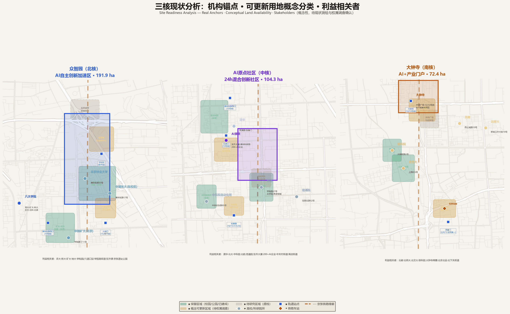
Governance structure suggestions (conceptual, pending policy study): - Leadership Group: District government leads, planning/tech/economy/finance/sub-district participate, coordinating policies and major decisions - Operating Platform Company: Suggested led by district SOE, introducing professional operations team, responsible for daily operations, scenario management, event organization - Expert Committee: AI safety, urban planning, privacy protection, community representatives, responsible for scenario admission and ethics review - Community Council: Resident representatives + merchant representatives + operator, quarterly meetings, participating in spatial management and scenario review - Open-Source Governance: Technical architecture and data standards open source, accepting global developer contributions, with technical steering committee
Implementation Preconditions and Problem Checklist
Six factors constrain near-term implementation. For each, this proposal states a management judgment, near-term work, and required deliverables — problems are not avoided, conditions are not fabricated, and progress has handles.
| Implementation Problem | Management Judgment | Near-Term Work (0-12 months) | Required Deliverable |
|---|---|---|---|
| Official boundaries, ownership, and current conditions incomplete | Existing layers are for proposal drafting only; land acquisition, supply, and construction staking uniformly adopt results confirmed by competent authorities; this proposal does not substitute | Coordinate with planning/natural resources authorities and right-holders to verify red lines, property rights, leases, projects under construction, and current use parcel by parcel; complete building survey within 368.6 ha three-core area (441 conceptual blocks require field verification) | Unified working base map; ownership checklist (parcel ID/area/use/right-holder); current building ledger (structure/floors/year/use status) |
| Slow-traffic gaps and station connection problems along the corridor | Start with the most mature 1-km demonstration segment (AI Origin segment, N-01); avoid simultaneous full-corridor construction; passenger flow changes after Line 13 split require reassessment | Complete traffic surveys (slow-traffic volume/cross-section/conflict points), rail safety coordination (work permits within protection zone), utility mapping, tree survey, and typical cross-section comparison; coordinate station integration with MTR operator | Demonstration segment implementation plan; rail protection special opinion; utility composite drawing; construction drawing brief; station integration design conditions |
| Convenience service facilities scattered; construction and operations responsibility easily disconnected | Service nodes must be implemented together with site, personnel, funding, and maintenance responsibility; no "ownerless" facilities; prioritize ground-floor conversion, time-sharing, and demountable facilities | Confirm 3 first-phase nodes (Zhimai Origin Plaza, Wudaokou station connection, Dazhongsi gateway); verify land, utility connections, staffing, and annual O&M budget; define property owner, operator, and maintenance standard for each node | Node siting table (coordinates/area/connections); facility checklist (quantity/spec/unit cost); operations responsibility table (owner/operator/frequency/funding source) |
| Three cores have significantly different renewal conditions; uniform development model inappropriate | Zhongzhiyuan (industrial heritage conversion), AI Origin (mixed renewal), Dazhongsi (commercial upgrade) each require separate project lists and financial balance plans | Verify ownership, structural safety, fire safety, evacuation, industry demand, and operating conditions per core; Zhongzhiyuan factories start with structural assessment; AI Origin starts with ownership verification; Dazhongsi starts with commercial strategy | Three project lists (demolish/renovate/retain classification + area + investment); three precondition checklists (approvals/timeline/responsible departments); three-core financial balance plans |
| Existing space efficiency and public service supply need coordination | Prioritize ground-floor conversion, time-sharing, and demountable facilities to reduce upfront investment and relocation impact; no large-scale demolition | Inventory available ground floors (street retail/vacant factories/stilts), vacant sites, and existing supporting facilities across three cores; define retain/repair/renovate methods; establish "space ledger + time-sharing" mechanism | Building classification renewal checklist (retain/repair/renovate/demolish); shared-use agreement key points (hours/cost/maintenance); demountable facility catalog |
| AI services lack unified application and operating rules | Each AI service must define responsible entity, manual processing channel, data scope, stop authority, and complaint channel; no "launch first, paperwork later" | Establish AI service project brief template, joint review form, trial operation record, and annual evaluation form; first batch of 4 test/verification scenarios (SC-03/04/08/09) as pilots before scaling | 12-service checklist (see below); 8 review conditions (see below); operations ledger template; incident response plan |
Public AI Service Review and Release Protocol
This proposal plans 15 AI scenario nodes (including 4 test/verification scenarios), of which 12 are public-facing services. All public AI services must pass a five-node review process — Application → Joint Review → Trial Evaluation → Acceptance → Annual Review — before launch; failure at any node pauses the service.
Twelve Proposed Public AI Services:
| ID | Service Name | Location | Responsibility Type | Manual Alternative | Data Scope |
|---|---|---|---|---|---|
| S01 | AI Cultural Guide | 4 pilgrimage landmarks + heritage nodes (LM-01~04) | Public education operations | Physical guide maps + human-guided tours (2 daily) | Session location only; no tracking or storage |
| S02 | Developer Walk Interactive Display | Corridor mid-section (LM-03/SC-01) | Public education operations | Screen-free walking mode (ground inscriptions readable) | No personal data collection |
| S03 | AI Health Navigation | AI Origin Community (SC-05) | Public health service group | Community health center manual window (working hours) | Anonymous health queries; no personal records |
| S04 | AI Education Space | AI Origin mixed blocks (SC-06) | Talent service operations | Offline classes + teacher supervision | Student registration stored locally; parents can view/delete |
| S05 | AI Legal Assistant | Dazhongsi business space (SC-07) | Professional services group | Lawyer on-duty window (2x/week) + 12348 hotline | Query records auto-deleted after 30 days; no other use |
| S06 | Accessibility Navigation | All public spaces (SC-11) | Local public services | Continuous tactile paving + wheelchair ramps + human service hotline | On-device visual processing; images not uploaded or stored |
| S07 | Public Issue Routing | Digital interface + Switch Plaza terminals (SC-12) | Project governance & independent evaluation | Community center paper suggestion box + 12345 hotline | Anonymous submission allowed; tickets confirmed by human before dispatch |
| S08 | AI Custom Retail | Dazhongsi retail space (SC-13) | Commercial operation (market) | Traditional shelves + human shopping guide | Preference data local only; consumers can delete anytime |
| S09 | AI Finance & Compliance Advisor | Dazhongsi business space (SC-14) | Professional services group | Licensed institution human consultation window | No financial account data; advice labeled "non-professional opinion" |
| S10 | AI Immersive Experience | Dazhongsi gateway (SC-15) | Commercial operation (market) | Non-AI traditional exhibition mode | No iris/fingerprint biometrics; content human-reviewed |
| S11 | Red-Team Testbed (SC-03) | Zhongzhiyuan restricted area | Ethics & safety assessment | No public access (closed test environment) | Synthetic test data; no real personal data |
| S12 | Open Compute Sandbox (SC-04) | Zhongzhiyuan compute center | Compute platform operations | Offline registration + human review | Full operation audit log; data stays in sandbox |
SC-08 low-speed robot delivery and SC-09 autonomous shuttle are test/verification scenarios managed under connected-vehicle road test permits, not listed as public services.
Eight Application Review Conditions (all must be satisfied before launch):
| # | Review Condition | Review Points | Failure Consequence |
|---|---|---|---|
| 01 | Responsible entity and funding | Property owner, operator, maintainer, and annual funding source defined; no funding = no approval | Project not approved |
| 02 | Manual or physical alternative | Each service must have a non-AI channel (human window/physical facility/phone hotline); alternative available ≥50% of AI service hours | Build alternative before re-review |
| 03 | Necessary data and retention period | Data minimization; define type, retention (max 180 days), deletion mechanism; no facial/iris/fingerprint biometrics (except S11/S12 closed tests) | Remove excess data fields before re-review |
| 04 | Personal information protection | Privacy policy prominently displayed; opt-in consent; minors require guardian consent; no data export | Remediate policy and consent mechanism |
| 05 | Failover and emergency response | Auto-switch to manual/normal service on failure; response time ≤15 min; emergency contact; quarterly drill | Build failover and pass drill |
| 06 | Suspension and termination authority | Residents can request suspension via Switch Plaza/mini-program/hotline; Expert Committee has veto; operator must execute within 24 hours | No launch until suspension authority is implemented |
| 07 | Fee, status, and complaint disclosure | Fees (if any) posted at entrance; AI status (green/yellow/red/blue) real-time visible; complaint channel and response time posted | Build disclosure facilities before re-review |
| 08 | Operation records and annual evaluation | Logs retained ≥1 year (failures/manual takeovers/complaints); annual independent third-party evaluation with public report | No renewal without annual evaluation report |
Five Processing Nodes:
Application → Joint Review → Trial Evaluation → Acceptance → Annual Review
(brief) (8 conditions) (90 days+fix) (handover) (eval report)
│ │ │ │ │
└─ Fail ←──────┴─ Fail ←───────┴─ Fail ←───────┘ 2 consecutive years fail → exit
- Application: Operator submits project brief (service content/data scope/funding/manual alternative)
- Joint Review: Expert Committee (AI safety + legal + community representatives) reviews all 8 conditions; pass/remediate/fail
- Trial Evaluation: 90-day trial after review approval; operating data public; community can raise objections; evaluation after trial
- Acceptance: Formal acceptance after successful trial; property handover and O&M responsibility defined
- Annual Review: Annual independent third-party evaluation of effectiveness, safety, and public satisfaction; 2 consecutive years of inadequate evaluation triggers exit
Key success factors: 1. Data institutions first: Public data opening rules, privacy protection standards, scenario admission processes established before construction 2. Anchor institution landing: At least 1-2 leading AI companies or national labs as first anchor tenants 3. Talent apartments built first: Housing retains talent; suggest first construction includes talent apartments 4. Scenario opening pace: First scenarios launch when demonstration segment completes, achieving "built and active" 5. Brand continuous operation: Open Week starts from year one, not waiting for "full completion"
Annual event system and long-term operations (agent.6): - Annual Zhimai Jing-Zhang Open Week (every September, commemorating Jingzhang Railway opening): developer conference + open-source showcase + scenario open day + AI art festival; - AI Origin Summit (spring), Open Source Hackathon (quarterly), Red Team Challenge (semi-annual), Public AI Day (monthly); - Developer community operations: residency program, mentor network, open-source bounties, community governance, knowledge accumulation — five mechanisms; - Scenario open operations: annual scenario list → application → safety assessment → ethics review → testing → evaluation → scale/terminate; - Conversion path: research → pilot → incubation → capital → customers → scenarios → feedback iteration.
International communication strategy (agent.5): - Multilingual content: Core materials (proposal, logo explainer, scenario cards, Open Week website) in Chinese and English, with key pages expanding to Japanese/Korean/French/Spanish; English tagline "Zhimai Jing-Zhang: Where Railway Heritage Meets AI-Native Urbanism" - Overseas developer community partnerships: Zhimai Jing-Zhang zones on GitHub, Hugging Face, Papers with Code; Open Week overseas satellite events (suggested first-year connections with Mila Montreal and Station F Paris); international university AI club tours - International media and academic channels: Feature articles in MIT Technology Review, Wired, Nature Cities; submissions to ACM/IEEE conferences; coverage in Dezeen, ArchDaily, Domus - City character output: The unique narrative of "railway heritage + AI-native" distinguishes this from pure tech parks like Silicon Valley/Zhongguancun — emphasizing historical depth, public space, human-centered governance, open-source culture; landmarks (LM-01~04) designed as visually shareable icons - Developer IP: Original concepts like 1909 Protocol and Spatial Versioning released as technical white papers + open-source code + TED talks, building the "Zhimai" technology brand
Attraction and conversion mechanism (agent.6): - Open Week enterprise follow-up: Collect enterprise intentions during event → 1-on-1 follow-up within 2 weeks → landing proposal within 1 month (space/policy/compute/talent package) → registration or move-in decision within 3 months - Landing incentive package (conceptual, pending policy study): ① Space package — priority site selection in three cores + rent discounts (suggested 50% year 1, 30% year 2); ② Compute package — free 10,000+ P GPU hours (suggested 100,000 GPU hours for startups in year 1); ③ Talent package — priority talent apartment access + Haidian talent policy connection; ④ Capital package — connection to Zhongguancun Development Group, Haidian venture guidance funds; ⑤ Scenario package — priority AI scenario testing eligibility - Zhongguancun policy connection: Enterprises moving into Zhimai Jing-Zhang automatically enter Zhongguancun high-tech enterprise service system, enjoying R&D super-deduction and technology contract registration; aligned with Haidian "Two Zones" policies - Conversion funnel metrics (conceptual targets): Open Week participants 500+ → deep engagement 100+ → landing 30+ → funded 10+ → scaled 5+ (annual) - Follow-up and iteration: Quarterly check-ins with landed enterprises; annual "Zhimai Jing-Zhang Innovation Ecosystem Report"
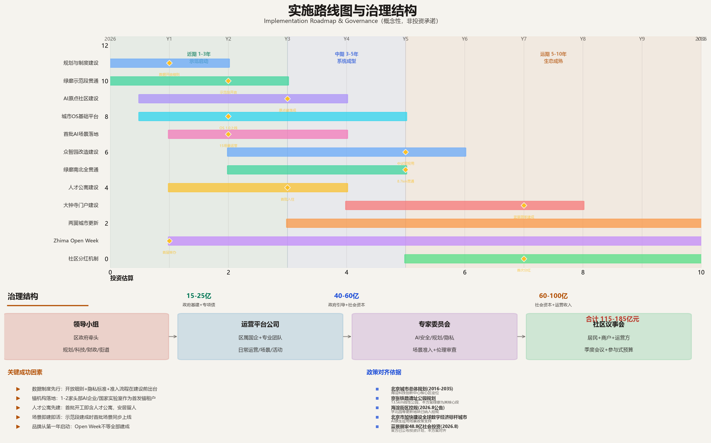
Investment figures are conceptual order-of-magnitude estimates, not investment commitments; governance structure is policy suggestion, pending government study.
AI Verification Protocol and Fault Injection Testing
Core principle: Good urban intelligence must prove not only that "it works when complete" but also that "it refuses when something is missing or fails." This section establishes a verifiable framework for the 1909 Protocol, including fault injection test design, degradation and manual takeover mechanisms, AI-free equivalent paths, and a field verification roadmap. All test results clearly distinguish "synthetic environment pass" from "field verified"; synthetic tests are never presented as field performance.
Verification Framework: Three Gates
The 1909 Protocol's five mechanisms (Token → Interlocking → Block Section → Semaphore → Dispatch) correspond to three verification gates, each with explicit pass and block conditions:
| Gate | Verification Target | Pass Condition | Block Condition (any one triggers block) |
|---|---|---|---|
| G1 Token Gate | AI agent identity and permissions | Token contains scenario ID, permission scope, validity period, responsible entity, and is within validity | Token missing/expired/over-scope/responsible entity unsigned |
| G2 Interlock Gate | Data permissions × physical safety × community authorization | All three simultaneously satisfied: data use within reviewed scope, physical safety assessment passed, community publication without major objection | Data out of scope, physical isolation not in place, community objection ≥50 co-signatures or >30% opposition |
| G3 Block Gate | Runtime safety | Scenario operates within designated block section, no boundary crossing; compute/speed/hours within quota; health check normal | Boundary crossing, quota exceeded, health check failure, emergency brake triggered |
The three gates are in series; any gate blocking prevents the AI scenario from "clearing the route" or causes immediate "stop." Gate logic is enforced by the Urban OS and cannot be manually bypassed by operators (emergencies handled by dispatcher switching to full-manual mode).
Fault Injection Test Design
To verify the three gates and degradation mechanisms, this proposal designs eight categories of fault injection tests, executed per service in a synthetic environment:
| Test Category | Injected Fault | Expected System Behavior | Gate |
|---|---|---|---|
| F01 Missing token | Remove AI agent's spatial token | System refuses entry to section; physical barrier does not open; intrusion attempt logged | G1 |
| F02 Expired token | Use expired token to request entry | Entry refused; renewal prompt; dispatch desk notified | G1 |
| F03 Permission over-reach | Token allows SC-08 but requests SC-09 data | Unauthorized access refused; attempt logged; security audit notified | G1 |
| F04 Missing data field | "Community authorization" field absent in interlock check | Interlock fails; scenario cannot start; missing field identified | G2 |
| F05 Physical safety failure | Barrier sensor reports fault in robot delivery section | Section barrier closes; robot remote-stops; dispatch desk alarm | G2/G3 |
| F06 Network interruption | Block section loses connection to dispatch >30 seconds | AI devices in section execute preset safety strategy (stop/lights off/local mode); dispatcher confirmation required after recovery | G3 |
| F07 Compute over-quota | Scenario compute request exceeds quota by 200% | Throttle or refuse new requests; other sections unaffected; operator notified to scale | G3 |
| F08 Emergency brake | Pedestrian enters robot-only lane | Robot emergency brake within ≤1m (at 10 km/h); remote safety operator alerted; incident logged | G3 |
Test execution: - Each public AI service (S01-S12) and test scenario (SC-08/09) must pass all 8 fault injection categories before launch - Tests execute in a synthetic environment (sandbox) with simulated data and virtual space; no real public involved - Each fault category executed 10 times; 10/10 pass required - Results verified by independent third party with public report; report included in annual review
Synthetic Test Results (Not Field Performance)
The following are synthetic test expectations from the design phase, based on 1909 Protocol gate logic, demonstrating the framework's design completeness. These results do not represent field operation or field verification:
| Test Item | Synthetic Environment Expectation | Field Status |
|---|---|---|
| Complete contracts (all 8 review conditions met) | 12/12 pass → eligible for field trial | Not run (0/12) |
| Single-field missing (F01-F04 each injected) | 96/96 blocked (any missing field refuses startup) | Not run |
| Runtime faults (F05-F08 each injected) | 32/32 transition to safe state (stop/degrade/manual mode) | Not run |
| Manual takeover response | Dispatcher can switch to full-manual within 15 seconds | Not run |
| Community suspension request | Switch Plaza/mini-program suspension executed within 24 hours | Not run |
Honest statement: The above synthetic test results are design-phase logical verification expectations derived from 1909 Protocol gate rules. Field performance must be verified through actual testing after the demonstration segment is built; this proposal does not preset a field pass rate. Field test results will be first published 90 days after trial operation begins.
Degradation and Manual Takeover Mechanism
When an AI service fails or is blocked, the system automatically executes a four-level degradation strategy ensuring public services are not interrupted:
| Level | Trigger | System Behavior | Public Perception |
|---|---|---|---|
| L0 Normal | All three gates pass | AI operates normally; semaphore green | AI service available |
| L1 Degraded | Single-section fault/network jitter/compute throttling | AI functions limited in that section (e.g., robot speed reduced to 5 km/h, guide switches offline); other sections unaffected; semaphore yellow | Service partially available with notice |
| L2 Manual | Interlock failure/safety sensor fault/emergency brake | All AI in section stops; switches to manual service (human window/physical guide/phone hotline); physical barrier closes; semaphore red | AI unavailable; manual service normal |
| L3 Full stop | Systemic fault/major safety incident/community suspension request | All AI services stop corridor-wide; all devices enter safe state (stop/lights off/disconnect); dispatch desk activates emergency response; semaphore blue (maintenance) | All AI unavailable; public space open normally |
Manual takeover safeguards: - Each AI service must define L2 manual mode operating procedures and staffing at design stage - Each core dispatch desk staffed with at least 2 certified dispatchers (7:00-22:00 on duty, 22:00-7:00 on call) - Dispatchers can switch to L2/L3 without prior approval, with post-hoc reporting - L2 manual service response time ≤5 minutes (on-site) / ≤3 minutes (phone) - Quarterly degradation drill; drill records included in annual evaluation
AI-Free Equivalent Paths
This proposal commits: no person loses public services due to AI failure, non-use of AI, or lack of digital skills.
| Public Service | AI Path | AI-Free Equivalent Path | Guarantee Standard |
|---|---|---|---|
| Cultural guide | AI multilingual guide (S01) | Physical guide maps (CN/EN/JP/KR) + human-guided tours (2 daily) | Physical maps 24h; human tours ≥50% of AI hours |
| Health consultation | AI health navigation (S03) | Community health center manual window | Manual window ≥8 hours/day on workdays |
| Legal service | AI legal assistant (S05) | Lawyer on duty (2x/week) + 12348 public legal hotline | Hotline 24h; lawyer ≥8 hours/week |
| Accessibility | AI accessibility assistant (S06) | Continuous tactile paving + wheelchair ramps + human hotline | Full barrier-free coverage; hotline answered work hours |
| Feedback | AI issue routing (S07) | Community center paper box + 12345 hotline | Box opened daily; hotline 24h |
| Slow traffic | Robot delivery (SC-08, test) | Normal slow path unaffected; robot lane physically separated | Pedestrian path always open during test; not occupied |
| Public space | Zhimai heartbeat light river/interactive installations | Plaza functions normally when lights off; installations never block circulation | Public space 24h open; AI is additive, not replacement |
AI-free route width guarantee: Jingzhang Green Corridor main spine pedestrian clear width ≥4.0 m (AI installations and robot lanes do not occupy this width); barrier-free clear width ≥1.8 m; wheelchair passage throughout. Robot-only lane (SC-08 test segment) is 1.5 m wide with flexible barriers physically separating from pedestrian path; barriers removed after testing, restoring normal slow path.
Field Verification Roadmap
| Phase | Timing | Verification Content | Pass Standard | Responsible Party |
|---|---|---|---|---|
| V1 Synthetic | Before launch | 8 fault injection categories (sandbox) | 12 services × 8 categories × 10 reps = 960/960 pass | Operator + third-party assessor |
| V2 Closed Course | 30 days before trial | Physical safety in closed test facility (robot braking, barriers, e-stop) | F05/F08 100 reps each zero failure; braking distance ≤1m | Operator + safety regulator |
| V3 Limited Field | Trial 0-90 days | Limited public within 1-km demo segment with remote safety operators | Zero incidents; manual takeover ≤0.5/100km; satisfaction ≥70% | Operator + community observers |
| V4 Expanded Field | Trial 90-180 days | Expand to 3 km, add service types | 90 consecutive days zero at-fault incidents; satisfaction ≥75%; complaint resolution 100% | Operator + Expert Committee |
| V5 Continuous | After official launch | Annual fault injection re-test + quarterly degradation drill + annual third-party evaluation | Annual re-test 100% pass; ≥4 drills/year; evaluation report public | Independent third party |
Failure at any phase pauses expansion and returns to the previous phase for remediation. Field test data (incidents, takeovers, complaints, satisfaction) is fully public, subject to community and media oversight. This proposal does not promise "zero failures" for AI services, but promises failures are detectable, blockable, degradable, recoverable, and traceable.
Verification Protocol and Scenario Milestone Timeline Integration:
The three gates (G1/G2/G3) and five field validation stages (V1-V5) are not a standalone methodology but are directly embedded into the first-year milestones of the four test verification cards:
| Timeline | Gate/Stage | SC-03 Red Team | SC-04 Compute Sandbox | SC-08 Robot Delivery | SC-09 Auto Shuttle |
|---|---|---|---|---|---|
| Y1 Q3 | G1 token + V2 closed site | M1 Testbed complete: isolation verified, >=20P | — | M1 Segment accepted: 1.2km lane+barriers+insurance | M1 Roadside complete: 8 V2X+3 stops+signal integration |
| Y1 Q4 | G2 interlock + V1 synthetic | M2 First models enter: >=3 orgs, >=10 models | M1 Sandbox live: >=200 users, zero escapes | M2 First tests: <=3 firms, <=3 robots, >=95% on-time | M2 First tests: <=4 buses, <=0.2 takeovers/100km |
| Y2 Q1 | G3 block + V3 limited field | — | M2 Universities onboard: >=5 schools, >=500 students | — | M3 Limited passenger: >=200 riders/day |
| Y2 Q2 | V3 ongoing | M3 Vulnerability sharing: >=20 high-risk disclosed | — | M3 Expansion eval: 90 days zero incidents, >=70% satisfaction | — |
| Y2 Q3 | V4 expansion | — | M3 Full operation: >=70% utilization, >=4.0 satisfaction | M4 Expansion decision: pass->2.4km/20 robots | — |
| Y2 Q4 | V5 continuous | M4 Standards: >=1 group standard/white paper | M4 First incubation: >=10 teams, >=3 funded | — | M4 Expansion eval: pass->apply for full 9km |
Integration logic: - G1 Token Gate maps to each scenario's M1 (facility acceptance): token contains scenario ID, permission scope, responsible party; M1 pass required before token issuance - G2 Interlock Gate maps to each scenario's M2 (first test entry): data permission x physical safety x community authorization all satisfied; F01-F04 synthetic tests 96/96 pass required before entry - G3 Block Gate maps to V2-V3 (closed site to limited field): F05/F08 100 cycles each with zero failure (V2) before V3 limited public; runtime boundary/quota/health failures trigger immediate "stop" - V4 Expansion maps to each scenario's M4: 90 consecutive days zero at-fault incidents + satisfaction threshold required for expansion; fail -> return to V3 remediation - V5 Continuous Validation runs through formal operation: annual fault injection retest + quarterly degradation drills; Switch Plaza vote results can trigger scenario rollback
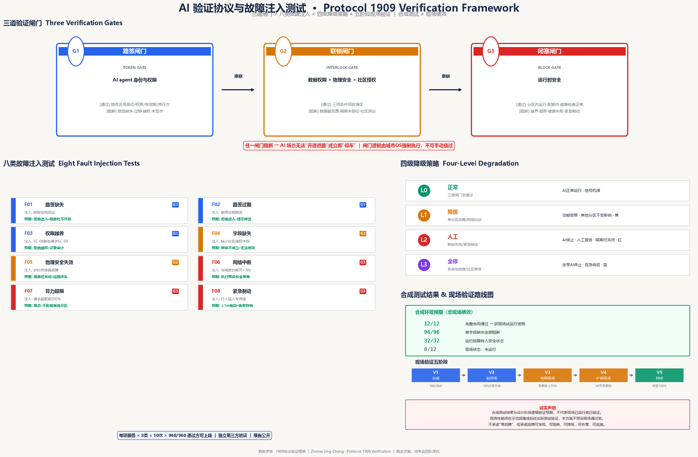
Metrics System, Area Recomputation, and Compliance Matrix
Core metrics all recomputed from GeoJSON under EPSG:4548 projection:
| Metric | Recomputed Value | Confidence |
|---|---|---|
| Design scope | 11.41 km² | medium |
| Research scope | 43.61 km² | medium |
| Three key areas | 3.69 km² (368.6 ha) | medium |
| Green ratio | 31.0% | medium |
| Public space ratio | 5.5% | medium |
| Building footprint | 655,000 m² (441 rounded C/U-shaped perimeter-block segments, incl. 3 retained heritage, ~18% density) | low (conceptual massing) |
| AI scenario nodes | 15 (including 4 test/verification) | high |
| AI pilgrimage landmarks | 4 | high |
| Talent apartment ratio (suggested) | ≥20% | low (policy suggestion) |
| Phased investment magnitude (conceptual) | 11.5-18.5 billion yuan | low (not commitment) |
| Suggested construction period | 10 years | low (conceptual phasing) |
| Public benefit categories | 6 | high |
Compliance matrix in compliance_matrix.json, covering notice 1.3/1.4/1.5 and agent.1~agent.6; standards matrix in standard_matrix.json; design depth matrix in design_depth_matrix.json.
Risk, Copyright, and Compliance
Boundary compliance: - No regulatory plan adjustments/FAR/building heights/intensities; - No specific parcel demolition/retention decisions; - No road alignments/rail alignments/bridges/tunnels/municipal utilities; - No underground space engineering feasibility/energy loads/municipal capacity; - No land ownership/investment estimates/development sequencing/approval judgments; - No non-public data, internal enterprise data, or personal privacy data; - All spatial suggestions phrased as "conceptual suggestions/reference schemes/for professional teams to develop further."
Materials and copyright compliance: - Base maps all self-drawn (matplotlib), no Amap/Baidu third-party commercial map tiles; - Fonts use system fonts (Microsoft YaHei/SimHei/DengXian); - Images all self-drawn or public sources; - Data only uses open-city.ai public task package and planning commission notice.
AI generation responsibility: Proposal generated by Hermes Agent (FTARCH); facts, citations, and expression are the contributor's responsibility; Logo/images are directional concepts.
Materials needed: Official precise redlines, three-core polygons, current buildings and ownership, current roads and municipal details. Jingzhang Railway Heritage Park completed section (Phase II opened August 2026, 9km/53ha) design materials obtained through public reporting, but detailed as-built drawings and facility inventories pending from parks department. See assumptions.json and report/copyright_statement.md.
Risk matrix: See risk.json, covering 8 risk categories (data privacy, implementation complexity, public acceptance, operations cost, policy uncertainty, spatial dispute, technology maturity, equity/inclusion), scored by likelihood(1-5)×impact(1-5) with mitigation measures. High-risk items include implementation complexity (16 points), long-term operations cost (12 points), and policy uncertainty (12 points).
References
All source materials for this proposal come from public or cleared sources, tiered by credibility in sources.json:
brief/site-package/design_brief.json: Overall design scope, objectives, and task framework;brief/site-package/agent_taskbook.json: Agent-oriented task book (agent.1~agent.6) and deliverable requirements;brief/site-package/sources.json: Official notices, task books, existing research source list;brief/site-package/geometry/provisional_boundaries.geojson: Repository maintainers' provisional rough boundaries (official_boundary=false), for area recomputation and layer generation, not official redlines;tracks.json/scenarios/*.json: Tracks declared by this proposal and official registrations corresponding to AI scenario cards;- Pre-qualification notice (Beijing Municipal Commission of Planning and Natural Resources, Haidian Branch, 2026-05-09): Design basis and area caliber source;
- Measures for Urban Design Management (MOHURD): Urban design formulation and management basis;
- Measures for Formulation and Approval of Regulatory Detailed Planning (MOHURD): Regulatory planning reference;
- Guides for Land Use Classification in Territorial Spatial Planning (MNR): Land use classification standard;
- Provisions on Depth of Building Engineering Design Documents (2016 Edition) (MOHURD): Deliverable depth reference;
- Jingzhang Railway Heritage Park public materials: Cultural narrative background;
- Jingzhang Railway Heritage Park Phase II opening public reports (August 2026): Built 9km/53ha green corridor, serving 70 communities/450K residents, design firms and facilities;
- Haidian District AI industry and innovation ecosystem official data (September 2025 Beijing municipal press conference): AI core industry 282.2 billion yuan (2024, 80% of Beijing), 1,900+ AI companies, 51 unicorns, 104 filed large models, 10,000+ PetaFLOPS intelligent computing, 646 academicians, R&D intensity ~11%, 1+X+1 industry system, AI innovation district plan;
- Haidian District 2024 National Economic and Social Development Statistical Bulletin (Haidian Statistics Bureau, April 2025): GDP 1.29071 trillion, tertiary 92.49%, per capita disposable 105,701 yuan, permanent population 3.122 million, 60+ 23%, 92 national key labs, high-value patents 540/10,000, technology contracts 380.69 billion;
- Xueyuan Road university consortium and research institute public materials: Eight universities, 20-university consortium, Beihang AI School/Embodied Intelligence Institute, CAS Institute of Automation/Software/Physics, CAICT along corridor;
- Beijing Metro Line 13 ridership and split public data: Station ridership along corridor, Xizhimen/Zhichunlu transfer data, Line 18 opening capacity changes, new stations;
- Zhongguancun National Independent Innovation Demonstration Zone public materials: Industry ecosystem background.
Risk matrix in risk.json (8 risk items); conceptual spatial nodes in spatial.json (7 nodes, 4 corridors, 3 areas, 14 items total); iteration record in changelog.md.
All citations traceable to above files; undisclosed or restricted materials not used; related gaps noted in assumptions.json.